<!doctype html>
<html lang="en">
<head>
  <meta charset="utf-8">
  <meta name="viewport" content="width=device-width, initial-scale=1">
  <title>arxiv digest — 2026-07-21</title>
  <style>
:root {
  --bg: #ffffff;
  --fg: #1f2328;
  --muted: #59636e;
  --border: #d0d7de;
  --card: #f6f8fa;
  --link: #0969da;
}
body {
  max-width: 980px;
  margin: 0 auto;
  padding: 2rem 1rem 5rem;
  font-family: -apple-system, BlinkMacSystemFont, "Segoe UI", Helvetica, Arial, sans-serif;
  line-height: 1.55;
  color: var(--fg);
  background: var(--bg);
}
a { color: var(--link); }
img { max-width: 100%; height: auto; }
pre, code { background: var(--card); border-radius: 6px; }
pre { padding: 1rem; overflow-x: auto; }
blockquote { border-left: 4px solid var(--border); padding-left: 1rem; color: var(--muted); }
details { margin: 0.6rem 0; }
summary { cursor: pointer; font-weight: 600; }
.paper-figures-scroll {
  display: flex;
  gap: 1rem;
  overflow-x: auto;
  overscroll-behavior-x: contain;
  padding: 0.75rem 0.25rem 1rem;
  margin: 1rem 0 1.25rem;
  border-top: 1px solid var(--border);
  border-bottom: 1px solid var(--border);
  scroll-snap-type: x proximity;
}
.paper-figure-card {
  flex: 0 0 min(260px, 72vw);
  scroll-snap-align: start;
  background: var(--card);
  border: 1px solid var(--border);
  border-radius: 12px;
  padding: 0.55rem;
}
.paper-figure-card img {
  display: block;
  width: 100%;
  max-height: 240px;
  object-fit: contain;
  background: white;
  border-radius: 8px;
}
.paper-figure-caption {
  display: block;
  margin-top: 0.5rem;
  color: var(--muted);
  font-size: 0.85rem;
}
.figure-strip-hint {
  color: var(--muted);
  font-size: 0.9rem;
  margin-bottom: -0.3rem;
}
</style>
  <!-- MathJax: renders $...$ inline math and $$...$$ display math, plus
       \(...\) and \[...\]. Loaded from the official CDN; works offline
       once cached. Configured to skip code/pre blocks so arxiv IDs that
       look like dollar amounts don't get mangled. -->
  <script>
    window.MathJax = {
      tex: {
        inlineMath: [['$', '$'], ['\\(', '\\)']],
        displayMath: [['$$', '$$'], ['\\[', '\\]']],
        processEscapes: true,
        processEnvironments: true
      },
      options: {
        skipHtmlTags: ['script', 'noscript', 'style', 'textarea', 'pre', 'code'],
        ignoreHtmlClass: 'tex2jax_ignore',
        processHtmlClass: 'tex2jax_process'
      }
    };
  </script>
  <script id="MathJax-script" async
    src="https://cdn.jsdelivr.net/npm/mathjax@3/es5/tex-chtml.js"></script>
</head>
<body>
<header style="background-color: #333; color: white; padding: 15px; margin-bottom: 20px;">
  <h1 style="margin: 0; font-size: 24px;">
    <a href="https://ochelpan.github.io/arXiv_clean/" style="color: white; text-decoration: none;">Main</a>
  </h1>
</header>

<h1>Daily arXiv Report</h1>

<hr>
<p>
<a href="index.html">← Index</a>
 · <a href="papers_03.html">← Previous</a> · <a href="papers_05.html">Next →</a>
</p>
<hr>

<h2>Papers 61–80</h2>
<p><a id="paper-2607.15873"></a></p>
<h3 id="programming-with-quantum-controlled-quantum-channels"><a href="http://arxiv.org/abs/2607.15873v1">Programming with Quantum-Controlled Quantum Channels</a></h3>
<p><strong>Authors:</strong> Kengo Hirata, Takeshi Tsukada<br>
<strong>Type:</strong> theory · <strong>Category:</strong> quantum information and computing · <strong>PDF:</strong> <a href="https://arxiv.org/pdf/2607.15873v1">https://arxiv.org/pdf/2607.15873v1</a><br>
<strong>Analysis basis:</strong> full PDF text, analyzed in chunks
<strong>Topic relevance:</strong> <code>analog quantum simulation</code> <strong>1/5</strong> · <code>correlated / nonlocal dissipation</code> <strong>1/5</strong> · <code>driven-dissipative phase transition</code> <strong>1/5</strong> · <code>methods for driven-dissipative</code> <strong>1/5</strong> · <code>non-equilibrium dynamics</code> <strong>1/5</strong></p>
<div class="figure-strip-hint">↔ Scroll figures horizontally</div>
<div class="paper-figures-scroll">
<figure class="paper-figure-card">
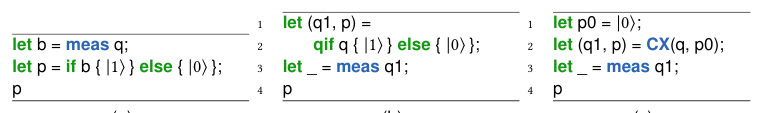
<figcaption class="paper-figure-caption"><b>Fig 1.</b> Fig. 2. Dilation of a program with no qif. (a) Source program. (b) Deferring the measurement. (c) Moving the qubit creation operations |0⟩and |1⟩to the beginning. Here CX is the controlled X gate.</figcaption>
</figure>
<figure class="paper-figure-card">
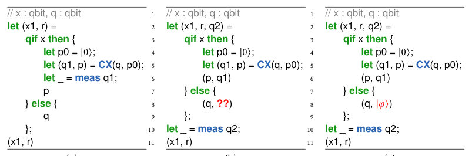
<figcaption class="paper-figure-caption"><b>Fig 2.</b> Fig. 3. An example of the program transformation. (a) Source program. (b) Hoisting the measurement outside qif results in an ill-typed program. (c) Adding a dummy value |𝜑⟩makes the program well-typed. Then, moving the qubit creations let𝑝0 = |0⟩before qif and replacing |𝜑⟩with 𝑈𝑝0 yields a dilation. Here 𝑈is a unitary satisfying 𝑈|0⟩= |𝜑⟩.</figcaption>
</figure>
<figure class="paper-figure-card">
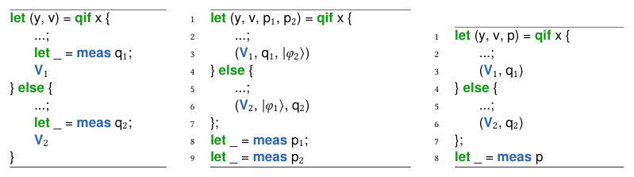
<figcaption class="paper-figure-caption"><b>Fig 3.</b> Fig. 4. Comparison between the previous and new transformations. The previous transformation introduces the else-branch dummy value |𝜑1⟩corresponding to meas𝑞1 in the then-branch and the then-branch dummy value |𝜑2⟩corresponding to meas𝑞2 in the else-branch. The new transformation moves a pair of measurements from the then- and else-branches, so it does not require any dummy qubit values.</figcaption>
</figure>
<figure class="paper-figure-card">
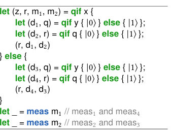
<figcaption class="paper-figure-caption"><b>Fig 4.</b> Fig. 5. Correspondence of measurements affects the translation.</figcaption>
</figure>
<figure class="paper-figure-card">
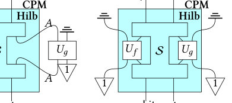
<figcaption class="paper-figure-caption"><b>Fig 5.</b> Fig. 14. Visualisation of syntactic dilation in a string diagram</figcaption>
</figure>
</div>

<p><strong>Summary.</strong> This paper addresses the ambiguity in defining quantum control flow by distinguishing between controlled operations and the quantum SWITCH. It introduces a novel quantum programming language enforced by a linear type system to correctly model the quantum SWITCH over arbitrary noisy channels. This provides a mathematically sound framework for writing complex quantum algorithms involving conditional logic.</p>
<p><strong>Why it may be interesting.</strong> It provides rigorous foundational tools for programming with general open quantum systems, which is crucial for simulating realistic physical processes involving dissipation or measurement.</p>
<details>
<summary>Detailed structure</summary>
<p><strong>Main problem.</strong> The paper distinguishes between 'controlled operations' and the 'quantum SWITCH,' arguing they are fundamentally different control mechanisms in quantum computation.</p>
<p><strong>Main result.</strong> It develops a novel, well-behaved quantum programming language with a linear type system capable of expressing the quantum SWITCH over general quantum channels.</p>
<p><strong>Method.</strong> The authors use semantic analysis based on program transformations and develop both denotational and operational semantics to formalize the control flow structures.</p>
<p><strong>Model / system.</strong> The model is abstract quantum computation using qubits, quantum channels (represented by CPTP maps/Kraus operators), and programming language constructs like quantum conditional branching ($  ext{qif}$).</p>
<p><strong>Key observables.</strong> Well-definedness of control mechanisms; preservation of semantics under translation between formalisms.</p>
<p><strong>Important parameters / regimes.</strong> Linearity constraints, the structure of Kraus decompositions, and the distinction between unitary vs. general channel operations.</p>
<p><strong>Assumptions / limitations.</strong> The core assumption is that controlled operations and the quantum SWITCH must be treated as distinct control primitives to maintain mathematical rigor for arbitrary channels.</p>
<p><strong>Figures summary.</strong> Figures illustrate the definition of controlled operations, the syntactic dilation rules mapping constructs from $ ext{QUGCL}'$ to $   ext{QifUnitary}$, and the semantics of various control flow structures using Kraus operators.</p>
<p><strong>Paper structure.</strong> The paper establishes the theoretical distinction between quantum control types, develops a formal language framework incorporating linearity constraints, and proves semantic preservation theorems by translating constructs between different formalisms (e.g., $   ext{Vac}$ to $  ext{QifUnitary}$).</p>
</details>
<details>
<summary>Abstract</summary>
<p>In contrast to a classical bit, which can only take the value $0$ or $1$, its quantum counterpart -- a qubit -- can exist in a superposition of $0$ and $1$. This is a superposition of data values, naturally raising the question of whether one can superpose not only data but also programs. For example, a particular superposition of programs, known as the quantum SWITCH, has attracted much attention, and its implementations and computational advantages have been studied extensively within the physics community.   A naive way to control a program by a qubit is by means of a controlled operation. Given an operation $F$, this amounts to considering an operation that behaves as $F$ when the control qubit is $|1\rangle$, and as the identity operation when the control qubit is $|0\rangle$. This idea works well when $F$ is a unitary operation, but it is not well-defined for a general quantum channel. By contrast, the quantum SWITCH is free from the well-definedness issue. This contrast leads to the key insight of this paper: controlled operations and the quantum SWITCH should be regarded as different kinds of quantum control mechanisms.   Building on this insight, we develop a novel quantum programming language with quantum control and measurement that can express the quantum SWITCH over quantum channels. Using a semantic analysis based on program transformations, we identify the source of the ill-behavedness of controlled operations as the \emph{correspondence problem}: a lack of coordination between the measurements performed in the then- and else-branches of quantum conditional branching. We address this problem with a linear type system that enforces alignment of the quantum operations used in the two branches, yielding a well-behaved language capable of expressing the quantum SWITCH.</p>
</details>
<p><sub><a href="#top">↑ back to top</a></sub></p>

<p><a id="paper-2607.15813"></a></p>
<h3 id="thermal-order-by-disorder-in-resonating-valence-bond-states-on-the-checkerboard-lattice"><a href="http://arxiv.org/abs/2607.15813v1">Thermal Order by Disorder in Resonating-Valence Bond States on the Checkerboard Lattice</a></h3>
<p><strong>Authors:</strong> Giorgi Gogaberishvili, Nika Kurdadze, Kirill Shtengel<br>
<strong>Type:</strong> theory · <strong>Category:</strong> strongly correlated electrons · <strong>PDF:</strong> <a href="https://arxiv.org/pdf/2607.15813v1">https://arxiv.org/pdf/2607.15813v1</a><br>
<strong>Analysis basis:</strong> full PDF text, analyzed in chunks
<strong>Topic relevance:</strong> <code>analog quantum simulation</code> <strong>1/5</strong> · <code>correlated / nonlocal dissipation</code> <strong>1/5</strong> · <code>driven-dissipative phase transition</code> <strong>1/5</strong> · <code>exotic spin models in light-matter</code> <strong>1/5</strong></p>
<div class="figure-strip-hint">↔ Scroll figures horizontally</div>
<div class="paper-figures-scroll">
<figure class="paper-figure-card">
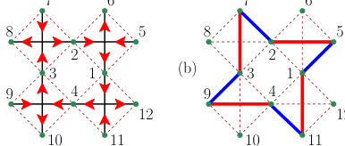
<figcaption class="paper-figure-caption"><b>Fig 1.</b> FIG. 2. A flippable plaquette in the six-vertex representation (a) and the corresponding pinwheel arrangement of singlets (b) consisting of the original singlets (red) and their rear- rangement after the flip (blue).</figcaption>
</figure>
<figure class="paper-figure-card">
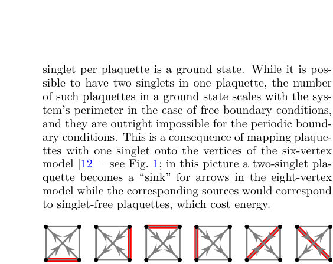
<figcaption class="paper-figure-caption"><b>Fig 2.</b> FIG. 1. Mapping between singlets (shown in red) and six- vertex configurations</figcaption>
</figure>
<figure class="paper-figure-card">
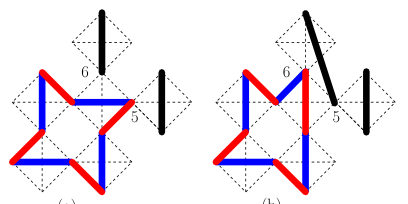
<figcaption class="paper-figure-caption"><b>Fig 3.</b> FIG. 3. Clockwise (red) and anticlockwise (blue) flippable configurations of singlets (a) before, and (b) after the action of operator ˆP56. Black singlets are not affected by the flips.</figcaption>
</figure>
<figure class="paper-figure-card">
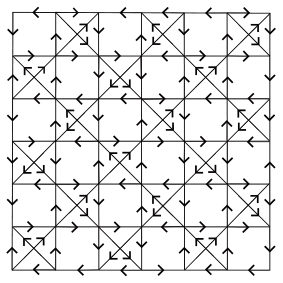
<figcaption class="paper-figure-caption"><b>Fig 4.</b> FIG. 4. Singlet orientations that result in the positive parity Fp = +1 for each pinwheel are indicted by arrows. Note that the parity is positive for each individual triangle and open square.</figcaption>
</figure>
<figure class="paper-figure-card">
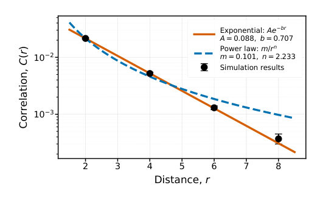
<figcaption class="paper-figure-caption"><b>Fig 5.</b> FIG. 5. Singlet–singlet correlation function between two hor- izontal singlets in the same vertical column as a function of distance, for a 24 × 24 lattice. The data are consistent with exponential decay, well described by e−r/1.41 law; the best power-law fit, r−2.23, is also shown for comparison.</figcaption>
</figure>
</div>

<p><strong>Summary.</strong> This theoretical work examines how thermal fluctuations can induce quasi-long-range order in RVB states on the checkerboard lattice. By showing that decoherence suppresses destructive quantum interference, the system's correlations transition from an expected exponential decay to a power-law decay characteristic of dimer models. The paper rigorously proves the mathematical basis for this state using advanced techniques involving local projector operators.</p>
<p><strong>Why it may be interesting.</strong> The concept of thermal order by disorder, where temperature drives a system into an ordered phase by suppressing quantum interference effects, is highly relevant for understanding exotic phases in strongly correlated electron systems like high-Tc superconductors.</p>
<details>
<summary>Detailed structure</summary>
<p><strong>Main problem.</strong> The paper investigates a novel mechanism for 'thermal Order by Disorder' within Resonating Valence Bond (RVB) states on the checkerboard lattice.</p>
<p><strong>Main result.</strong> Thermal decoherence suppresses destructive quantum interference, causing singlet-singlet correlations to decay with a power law ($1/r^2$) rather than exponentially, indicating quasi-long-range order.</p>
<p><strong>Method.</strong> The authors derive an effective local spin Hamiltonian and analyze correlation functions by comparing the pure RVB state (exponential decay) against the mixed state resulting from thermal decoherence (power-law decay).</p>
<p><strong>Model / system.</strong> The system is a spin-1/2 model on the checkerboard lattice, modeled using Resonating Valence Bond (RVB) states and related to Quantum Dimer models. The Hamiltonian involves complex local projectors and twelve-spin interactions.</p>
<p><strong>Key observables.</strong> Singlet–singlet correlation function $C(r)$ and dimer–dimer correlations; the diagnostic is the transition from exponential decay to power-law decay.</p>
<p><strong>Important parameters / regimes.</strong> The analysis focuses on the temperature regime $K \gg T \gg J$.</p>
<p><strong>Assumptions / limitations.</strong> The conclusion regarding power-law decay hinges on the linear independence of Valence Bond (VB) states, which is established through a detailed patch expansion procedure assuming periodic boundary conditions.</p>
<p><strong>Figures summary.</strong> Figures illustrate mappings between singlets and six-vertex configurations, show the action of plaquette operators, and detail the iterative process of proving linear independence by expanding patches on the lattice.</p>
<p><strong>Paper structure.</strong> The paper progresses from defining the Hamiltonian and RVB state to analyzing correlation functions in different regimes. It then dedicates significant effort to mathematically proving the linear independence of singlet coverings via a patch expansion procedure using local projector operators.</p>
</details>
<details>
<summary>Abstract</summary>
<p>We derive a local spin-1/2 Hamiltonian with a resonating valence bond ground state on the checkerboard lattice. The state is characterized by the exponential decay of singlet-singlet correlations, whereas dimer-dimer correlations decay with a power law in the corresponding Quantum Dimer model. This observation leads to a novel mechanism for thermal Order by Disorder whereby thermal decoherence suppresses destructive quantum interference between different contributions to the correlations in the ground state and results in a qualitatively different, quasi-long-range ordered mixed state.</p>
</details>
<p><sub><a href="#top">↑ back to top</a></sub></p>

<p><a id="paper-2607.15346"></a></p>
<h3 id="field-induced-first-order-transitions-and-phase-coexistence-in-the-kitaev-quantum-spin-liquid-candidate-baco2aso42"><a href="http://arxiv.org/abs/2607.15346v1">Field-induced first order transitions and phase coexistence in the Kitaev quantum spin liquid candidate BaCo2(AsO4)2</a></h3>
<p><strong>Authors:</strong> Tanner J. Legvold, Bin Gao, Rong-Zhu Lin, Violet Williams, Tong Chen, Dehong Yu, Chien-Lung Huang, Gage Eichman, Renjie Lui, Benedetta Flebus, Pengcheng Dai, Douglas Natelson<br>
<strong>Type:</strong> both · <strong>Category:</strong> strongly correlated electrons · <strong>PDF:</strong> <a href="https://arxiv.org/pdf/2607.15346v1">https://arxiv.org/pdf/2607.15346v1</a><br>
<strong>Analysis basis:</strong> full PDF text, analyzed in chunks
<strong>Topic relevance:</strong> <code>analog quantum simulation</code> <strong>1/5</strong> · <code>exotic spin models in light-matter</code> <strong>1/5</strong> · <code>spintronics-quantum-optics interface</code> <strong>1/5</strong></p>
<div class="figure-strip-hint">↔ Scroll figures horizontally</div>
<div class="paper-figures-scroll">
<figure class="paper-figure-card">
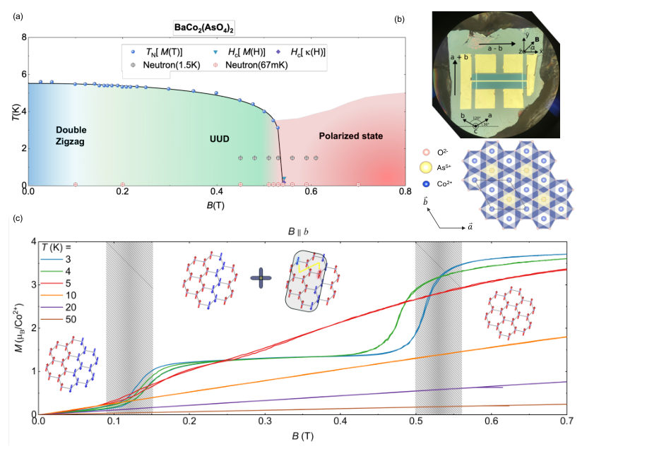
<figcaption class="paper-figure-caption"><b>Fig 1.</b> FIG. 1. Crystal structure and magnetic phase diagram of BaCo2(AsO4)2 (BCAO). (a)</figcaption>
</figure>
<figure class="paper-figure-card">
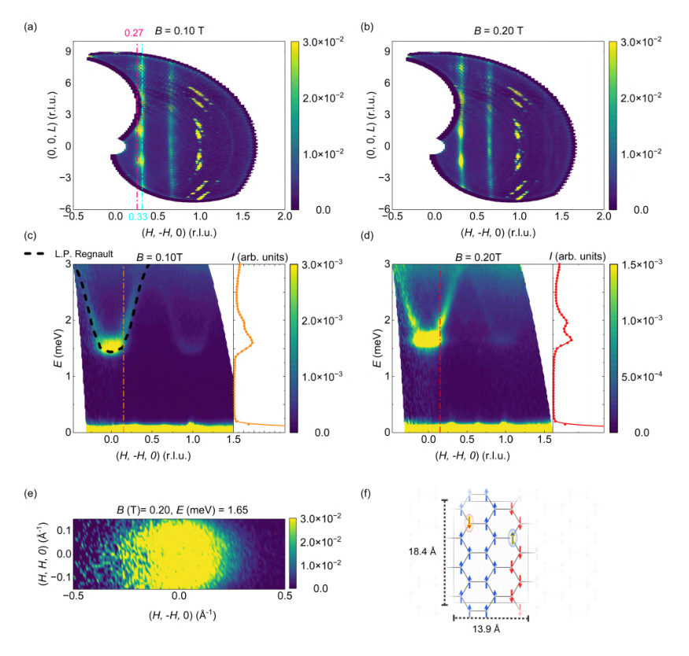
<figcaption class="paper-figure-caption"><b>Fig 2.</b> FIG. 2. Field-dependent magnetic structures and excitations. (a, b) Elastic neutron</figcaption>
</figure>
<figure class="paper-figure-card">
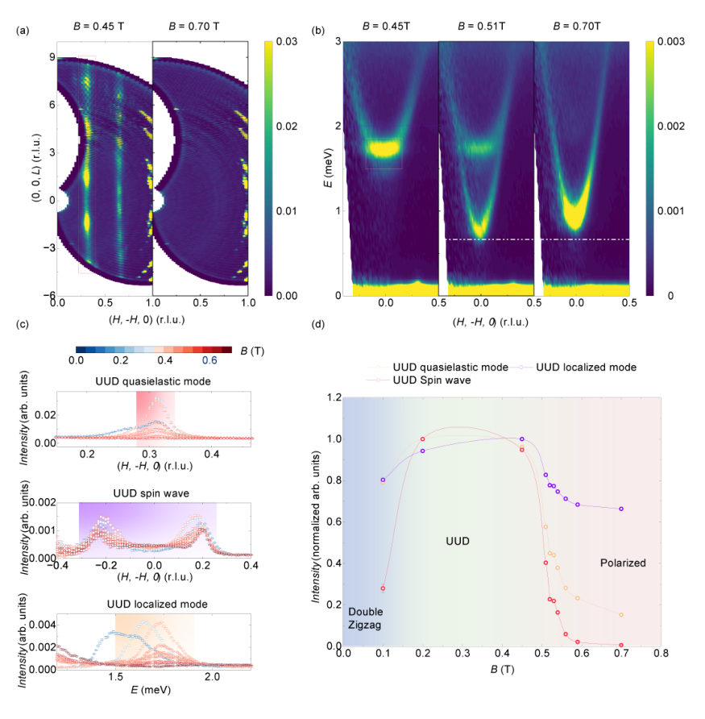
<figcaption class="paper-figure-caption"><b>Fig 3.</b> FIG. 3. Collapse of the UUD state and mode evolution driven by magnetic field.</figcaption>
</figure>
<figure class="paper-figure-card">
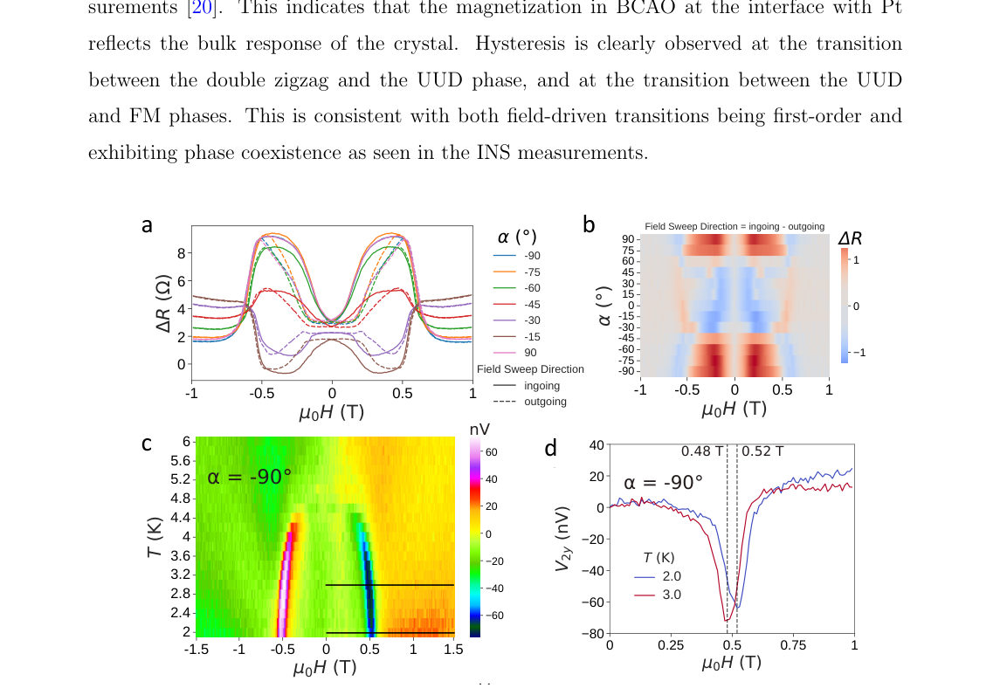
<figcaption class="paper-figure-caption"><b>Fig 4.</b> FIG. 4. Spin transport results on BCAO single crystals. (a) Spin Hall magnetoresistance traces as</figcaption>
</figure>
<figure class="paper-figure-card">
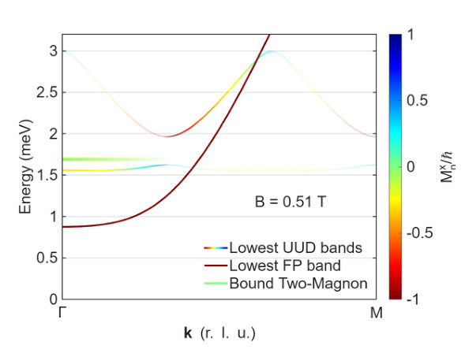
<figcaption class="paper-figure-caption"><b>Fig 5.</b> FIG. 5. Short-wavelength excitation spectrum along Γ–M in the coexistence regime (B = 0.51</figcaption>
</figure>
</div>

<p><strong>Summary.</strong> This study experimentally investigates field-induced transitions in the Kitaev candidate BaCo2(AsO4)2. Using neutron scattering and spin transport measurements, the authors find evidence for first-order phase coexistence rather than a continuous quantum liquid evolution. They conclude that observed excitations are better explained by bound magnon pairs, challenging previous interpretations of anomalous thermal transport.</p>
<p><strong>Why it may be interesting.</strong> This work is highly relevant because it uses advanced spectroscopic and transport techniques to test the boundaries between exotic quantum states (QSLs) and conventional magnetically ordered phases, providing crucial insights into strongly correlated magnetic materials dynamics.</p>
<details>
<summary>Detailed structure</summary>
<p><strong>Main problem.</strong> The study investigates field-induced first-order magnetic transitions and phase coexistence within BaCo2(AsO4)2, a material proposed as a Kitaev quantum spin liquid candidate.</p>
<p><strong>Main result.</strong> Neutron scattering and transport measurements reveal that the transitions are first-order, characterized by phase coexistence (UUD/FM), rather than continuous evolution toward a QSL state. Theoretical modeling suggests observed excitations arise from bound spin-flip pairs.</p>
<p><strong>Method.</strong> The research combines inelastic neutron scattering to probe magnetic excitations with transport measurements like the Spin Seebeck effect and theoretical modeling of magnon interactions.</p>
<p><strong>Model / system.</strong> The system is BaCo2(AsO4)2, an insulating material with Co2+ ions arranged on a honeycomb lattice. It exhibits multiple magnetic phases (double-zigzag, UUD, FM) whose transitions are studied under applied magnetic fields.</p>
<p><strong>Key observables.</strong> Magnetic order parameters (UUD, FM), excitation spectra (spin waves, localized modes), thermal conductivity ($\kappa/T$), and the sign/magnitude of the Spin Seebeck coefficient.</p>
<p><strong>Important parameters / regimes.</strong> Applied in-plane magnetic field ($B$) near critical fields like 0.15 T and 0.5 T; temperature ($T$); energy scales (meV).</p>
<p><strong>Assumptions / limitations.</strong> The analysis assumes that observed excitations can be modeled by bound spin-flip pairs rather than requiring a gapless spinon Fermi surface characteristic of a true QSL.</p>
<p><strong>Figures summary.</strong> Figures illustrate the magnetic phase diagram, field-dependent excitation spectra showing mode separation and collapse at transitions, and transport measurements (SMR/SSE) confirming hysteresis associated with first-order changes.</p>
<p><strong>Paper structure.</strong> The paper progresses from establishing the complex magnetic phase diagram via neutron scattering to detailing evidence of first-order transitions through multiple probes (INS, SMR, SSE), culminating in theoretical modeling that reinterprets anomalous transport signals as bound excitations rather than QSL signatures.</p>
</details>
<details>
<summary>Abstract</summary>
<p>BaCo2(AsO4)2 (BCAO) is an insulating Kitaev quantum spin liquid candidate with a rich low-temperature phase diagram. Below 5 K, it exhibits double-zigzag magnetic order. Upon application of an in-plane magnetic field, the magnetic structure first transforms into an up-up-down (UUD) state near 0.12 T and then enters a fully spin-polarized ferromagnetic (FM) state near 0.5 T. In the narrow field regime close to the polarized phase, a finite residual thermal conductivity has been reported, suggesting a possible field-induced quantum spin liquid phase. Using neutron scattering, we show that the field-induced double-zigzag-to-UUD transition near 0.15 T is accompanied by the emergence of a cluster of localized UUD spin excitations that coexist with conventional spin waves. Upon further increasing field, BCAO undergoes a first-order UUD-to-FM transition with coexistence of UUD and FM phases, accompanied by a sharp response in the spin Seebeck coefficient. These results do not support a quantum spin liquid scenario near the UUD-to-FM critical field. Instead, modeling indicates that the broad excitations arise from bound spin-flip pairs, while a low-lying dispersive branch near the FM phase boundary carries the same sign of magnetization as the FM order. These excitations naturally account for the observed sign of the spin Seebeck response and are likely relevant to the thermal conductivity near the critical field.</p>
</details>
<p><sub><a href="#top">↑ back to top</a></sub></p>

<p><a id="paper-2607.15703"></a></p>
<h3 id="how-topology-shapes-the-phase-behavior-of-polyelectrolytes"><a href="http://arxiv.org/abs/2607.15703v1">How Topology Shapes the Phase Behavior of Polyelectrolytes</a></h3>
<p><strong>Authors:</strong> David Beyer, Pierre J. Walker, Lena Tarrach, Zhen-Gang Wang, Christian Holm<br>
<strong>Type:</strong> theory · <strong>Category:</strong> statistical mechanics · <strong>PDF:</strong> <a href="https://arxiv.org/pdf/2607.15703v1">https://arxiv.org/pdf/2607.15703v1</a><br>
<strong>Analysis basis:</strong> full PDF text, analyzed in chunks
<strong>Topic relevance:</strong> <code>Keldysh / 2PI / non-Gaussian methods</code> <strong>1/5</strong> · <code>analog quantum simulation</code> <strong>1/5</strong> · <code>driven-dissipative phase transition</code> <strong>1/5</strong></p>
<div class="figure-strip-hint">↔ Scroll figures horizontally</div>
<div class="paper-figures-scroll">
<figure class="paper-figure-card">
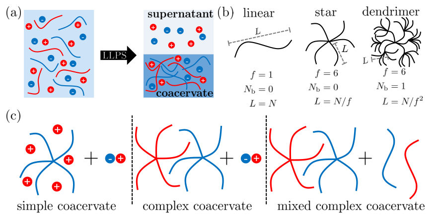
<figcaption class="paper-figure-caption"><b>Fig 1.</b> FIG. 1. (a): Polyelectrolyte solutions can split into a supernatant with a low polyelectrolyte concentration and a coacervate with a high polyelectrolyte concentration through LLPS. Blue and red chains correspond to polyanions and polycations, respectively. (b): Schematic representation of the different polymer topologies investigated in this work: linear chains, stars, and dendrimers. Note that for visual clarity, the different topologies are not shown at the same scale. (c): Overview of the different mixtures of polyelectrolytes studied in this work: simple coacervates (left panel), complex coacervates (middle panel), and salt-free, mixed complex coacervates (right panel).</figcaption>
</figure>
<figure class="paper-figure-card">
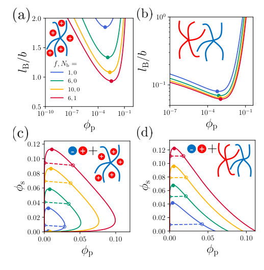
<figcaption class="paper-figure-caption"><b>Fig 2.</b> FIG. 2. Phase diagrams of simple (subfigure (a) and (c)) and complex (subfigure (b) and (d)) coacervates of varying topology. Subfigures (a) and (b) show salt-free phase dia- grams as a function of the polymer volume fraction and the Bjerrum length. Subfigures (c) and (d) show diagrams in the presence of salt as a function of the polymer volume fraction and the salt volume fraction (the Bjerrum length is set to lB = b). Solid lines correspond to the co-existence bound- ary; dashed lines correspond to tie lines connecting coexist- ing phases (empty markers); solid markers denote the critical points.</figcaption>
</figure>
<figure class="paper-figure-card">
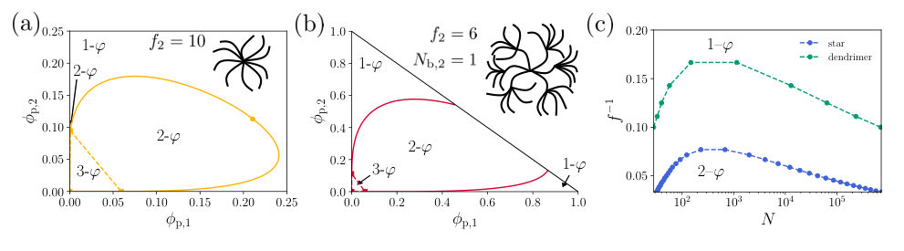
<figcaption class="paper-figure-caption"><b>Fig 3.</b> FIG. 3. Phase behavior of mixed complex coacervates where symmetric pairs are considered for all topologies, i.e. the same number of polyanions and polycations is always added to the system for a particular topology. “1-φ”, “2-φ” and “3-φ” denote regions where one, two or three phases coexist, respectively. (a): Phase diagram of a salt-free mixture of linear chains (volume fraction ϕp,1) and stars (f2 = 10, volume fraction ϕp,2). (b): Phase diagram of a salt-free mixture of linear chains (volume fraction ϕp,1) and dendrimers with one generation of branching (f2 = 6, Nb,2 = 1, volume fraction ϕp,2). (c): Global phase diagram of a salt- and solvent-free blend of linear chains with stars...</figcaption>
</figure>
</div>

<p><strong>Summary.</strong> This work establishes a theory showing that polymer topology dictates the phase behavior of polyelectrolytes, enabling control over coacervation independent of simple chemical changes. By using RPA within a statistical mechanics framework, the authors demonstrate that compact architectures enhance liquid-liquid phase separation propensity. This provides a powerful design principle for charged macromolecular systems.</p>
<p><strong>Why it may be interesting.</strong> While focused on classical polyelectrolyte physics, the rigorous application of mean-field approximations (RPA) to complex many-body systems and the development of topology-dependent interaction parameters share conceptual links with modeling correlations in quantum many-body systems.</p>
<details>
<summary>Detailed structure</summary>
<p><strong>Main problem.</strong> To develop a topology-specific theory for polyelectrolyte coacervation and understand how polymer architecture influences the phase behavior of charged macromolecules.</p>
<p><strong>Main result.</strong> Polymer topology acts as a powerful design lever, allowing fine-tuning of phase separation propensity independently of molecular weight or net charge. More compact topologies exhibit a greater tendency for liquid-liquid phase separation (LLPS).</p>
<p><strong>Method.</strong> The study employs a minimal theory combining the Flory-Huggins free energy with an electrostatic correlation term derived within the Random Phase Approximation (RPA).</p>
<p><strong>Model / system.</strong> The system consists of polyelectrolytes (charged macromolecules) forming simple or complex coacervates. Topologies studied include linear chains, stars, and dendrimers.</p>
<p><strong>Key observables.</strong> Propensity for liquid-liquid phase separation (coacervation), effective $\chi$ parameter, charge–charge structure factor $S_{cc}(k)$, and salt partition coefficients.</p>
<p><strong>Important parameters / regimes.</strong> Bjerrum length ($\lambda_B$), polymer topology parameters (e.g., number of arms $f$, generations $N_b$), molecular weight ($N$), and salt concentration.</p>
<p><strong>Assumptions / limitations.</strong> The analysis relies on the Random Phase Approximation (RPA) for electrostatic interactions and assumes Gaussian chain statistics for structure factor derivations.</p>
<p><strong>Figures summary.</strong> Figures illustrate phase diagrams showing coexistence boundaries as a function of $\lambda_B$ or salt concentration, comparing different topologies. Other figures show salt partitioning behavior and scaling laws related to topology.</p>
<p><strong>Paper structure.</strong> The paper develops the free energy functional using RPA, applies it to model various polymer topologies (linear, star, dendrimer), calculates phase diagrams for simple/complex coacervation under varying salt conditions, and analyzes the scaling dependence of effective interactions on molecular weight.</p>
</details>
<details>
<summary>Abstract</summary>
<p>We develop a topology-specific theory of polyelectrolyte coacervation using the random phase approximation and apply it to both simple and complex coacervation. Our results for stars and dendrimers show that more compact chain topologies display a greater propensity for liquid-liquid phase separation, as a function of both Bjerrum length and salt concentration. For mixtures of different topologies, we demonstrate that differences in polymer topology alone are sufficient to drive multiphase coacervation of polyelectrolytes, which we rationalize in terms of an effective $χ$ parameter. Analysis of a simplified global phase diagram reveals that the propensity for such topology-driven phase separation is largest at a finite molecular weight. Overall, our results establish polymer topology as a powerful design lever for tuning the phase diagram of charged macromolecules independently of molecular weight, net charge, and monomer chemistry, since changes in topology enable fine-tuning of the effective charge density without altering these molecular characteristics.</p>
</details>
<p><sub><a href="#top">↑ back to top</a></sub></p>

<p><a id="paper-2607.15675"></a></p>
<h3 id="strong-intervalley-mixing-between-copropagating-quantum-hall-edge-channels-in-a-silicon-mosfet"><a href="http://arxiv.org/abs/2607.15675v1">Strong intervalley mixing between copropagating quantum Hall edge channels in a silicon MOSFET</a></h3>
<p><strong>Authors:</strong> Gento Yamahata, Takase Shimizu<br>
<strong>Type:</strong> experiment · <strong>Category:</strong> other · <strong>PDF:</strong> <a href="https://arxiv.org/pdf/2607.15675v1">https://arxiv.org/pdf/2607.15675v1</a><br>
<strong>Analysis basis:</strong> full PDF text, analyzed in chunks
<strong>Topic relevance:</strong> <code>QC/QI experiment</code> <strong>1/5</strong> · <code>interference shaping light</code> <strong>1/5</strong> · <code>spintronics-quantum-optics interface</code> <strong>1/5</strong></p>
<div class="figure-strip-hint">↔ Scroll figures horizontally</div>
<div class="paper-figures-scroll">
<figure class="paper-figure-card">
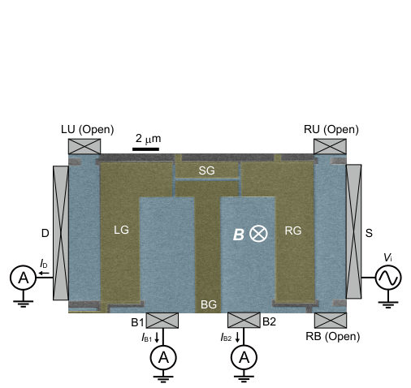
<figcaption class="paper-figure-caption"><b>Fig 1.</b> FIG. 1. Device and measurement setup. A scanning electron micrograph of the double-layer-</figcaption>
</figure>
<figure class="paper-figure-card">
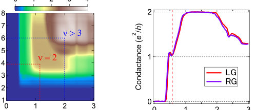
<figcaption class="paper-figure-caption"><b>Fig 2.</b> FIG. 2. Gate control of the quantum Hall filling factor. (a) Two-terminal conductance measured</figcaption>
</figure>
<figure class="paper-figure-card">

<figcaption class="paper-figure-caption"><b>Fig 3.</b> Figure 2(b) shows the two-terminal conductance measured between S and D as a function</figcaption>
</figure>
<figure class="paper-figure-card">

<figcaption class="paper-figure-caption"><b>Fig 4.</b> FIG. 3. Transition measurements between copropagating quantum Hall edge channels. (a)</figcaption>
</figure>
<figure class="paper-figure-card">
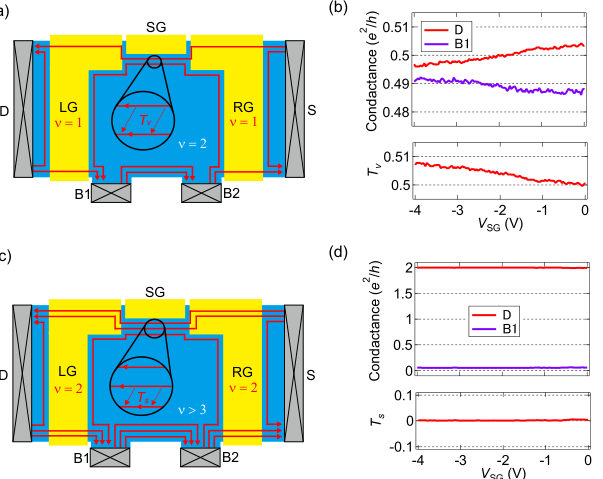
<figcaption class="paper-figure-caption"><b>Fig 5.</b> Figure 3(d) shows the conductances measured at D and B1, together with the transition</figcaption>
</figure>
</div>

<p><strong>Summary.</strong> The researchers demonstrated strong intervalley mixing between edge channels in a silicon MOSFET operating in the Quantum Hall regime. This finding establishes that the valley degree of freedom acts as an effective 'valley beam splitter' for quantum information processing. The results confirm this capability while simultaneously showing that spin-flip processes are strongly suppressed, making Si a promising platform.</p>
<p><strong>Why it may be interesting.</strong> This work demonstrates how engineered valley coupling in a solid-state platform can mimic quantum beam-splitter operations, which is highly relevant for building scalable quantum interferometers.</p>
<details>
<summary>Detailed structure</summary>
<p><strong>Main problem.</strong> The study investigates strong intervalley mixing between copropagating quantum Hall edge channels to establish a fundamental building block for compact silicon quantum Hall interferometers.</p>
<p><strong>Main result.</strong> Strong intervalley mixing was observed with a transition probability near 1/2, while interchannel transport requiring spin-flip scattering showed negligible probability, confirming the utility of valley degrees of freedom in Si MOSFETs.</p>
<p><strong>Method.</strong> Measurements were performed on a double-layer-gated Si MOSFET in the Quantum Hall regime using low-frequency lock-in techniques to measure conductance and extract transition probabilities via Landauer–Büttiker formalism.</p>
<p><strong>Model / system.</strong> The physical system is a double-layer-gated Silicon Metal-Oxide-Semiconductor Field-Effect Transistor (Si MOSFET) operating under high magnetic fields in the Quantum Hall regime. The valley degree of freedom is exploited as an alternative to spin for channel manipulation.</p>
<p><strong>Key observables.</strong> Transition probability ($T_v$) between valley edge channels, and transition probability ($T_s$) for spin-flip interchannel transport.</p>
<p><strong>Important parameters / regimes.</strong> Bulk filling factor ($
u=2$), low temperature (280 mK), high magnetic field (12.92 T).</p>
<p><strong>Assumptions / limitations.</strong> The analysis relies on accurately subtracting parasitic resistances from raw conductance measurements using the Landauer–Büttiker formalism.</p>
<p><strong>Figures summary.</strong> Figures illustrate the device setup, two-terminal conductance plateaus confirming filling factors ($
u=2$), and schematics detailing the geometry for measuring intervalley transitions ($T_v$) versus spin-flip transport ($T_s$).</p>
<p><strong>Paper structure.</strong> The paper details the experimental setup and measurement techniques using gate voltages to tune edge channel populations, followed by quantitative analysis using Landauer–Büttiker equations to extract the transition probabilities $T_v$ and $T_s$.</p>
</details>
<details>
<summary>Abstract</summary>
<p>Copropagating quantum Hall edge channels provide a promising platform for compact electron interferometry and flying quantum states. In silicon, the valley degree of freedom offers a natural alternative to spin-resolved edge channels because spin-flip scattering is strongly suppressed by the weak spin-orbit interaction. Here, we investigate interchannel transitions between copropagating valley edge channels in a double-layer-gated silicon metal-oxide-semiconductor field-effect transistor. With the bulk filling factor set to $ν=2$, two spin-polarized valley edge channels are brought into close proximity near a depleted side gate. We observe strong intervalley mixing, with a transition probability close to 1/2, indicating nearly complete equilibration between the two valley edge channels. In contrast, interchannel transport between edge channels with different spin orientations shows negligible transition probability, consistent with suppressed spin-flip scattering in silicon. These results demonstrate that intervalley coupling at a Si/SiO$_2$ interface can provide a beam-splitter-like operation for copropagating valley edge channels, establishing a key building block toward compact silicon quantum Hall interferometers.</p>
</details>
<p><sub><a href="#top">↑ back to top</a></sub></p>

<p><a id="paper-2607.15902"></a></p>
<h3 id="ultrametric-organization-of-energy-landscapes-on-random-erdos-renyi-graphs-topological-origin-of-barrier-hierarchy"><a href="http://arxiv.org/abs/2607.15902v1">Ultrametric organization of energy landscapes on random Erdős--Rényi graphs: topological origin of barrier hierarchy</a></h3>
<p><strong>Authors:</strong> A. P. Zubarev<br>
<strong>Type:</strong> theory · <strong>Category:</strong> disordered systems and neural networks · <strong>PDF:</strong> <a href="https://arxiv.org/pdf/2607.15902v1">https://arxiv.org/pdf/2607.15902v1</a><br>
<strong>Analysis basis:</strong> full PDF text, analyzed in chunks
<strong>Topic relevance:</strong> <code>driven-dissipative phase transition</code> <strong>1/5</strong> · <code>non-equilibrium dynamics</code> <strong>1/5</strong> · <code>non-equilibrium universality</code> <strong>1/5</strong></p>
<div class="figure-strip-hint">↔ Scroll figures horizontally</div>
<div class="paper-figures-scroll">
<figure class="paper-figure-card">
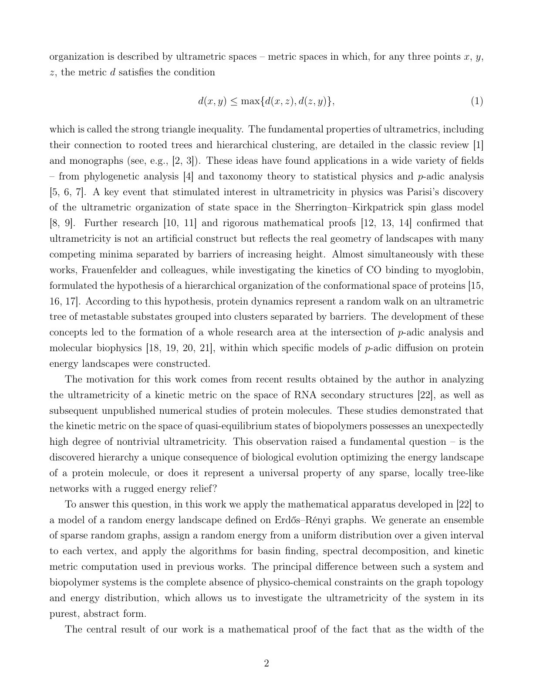
<figcaption class="paper-figure-caption"><b>Fig 1.</b> Low-resolution page preview, page 2</figcaption>
</figure>
<figure class="paper-figure-card">
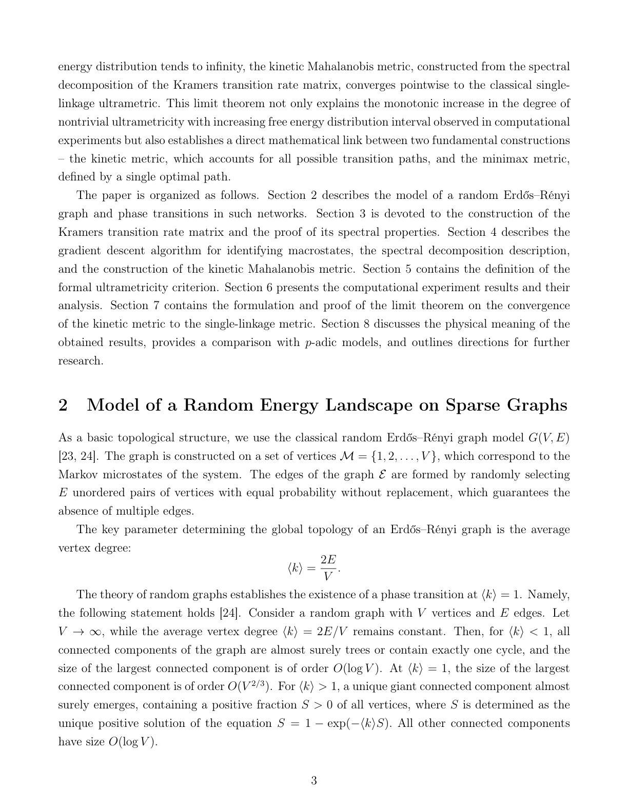
<figcaption class="paper-figure-caption"><b>Fig 2.</b> Low-resolution page preview, page 3</figcaption>
</figure>
<figure class="paper-figure-card">
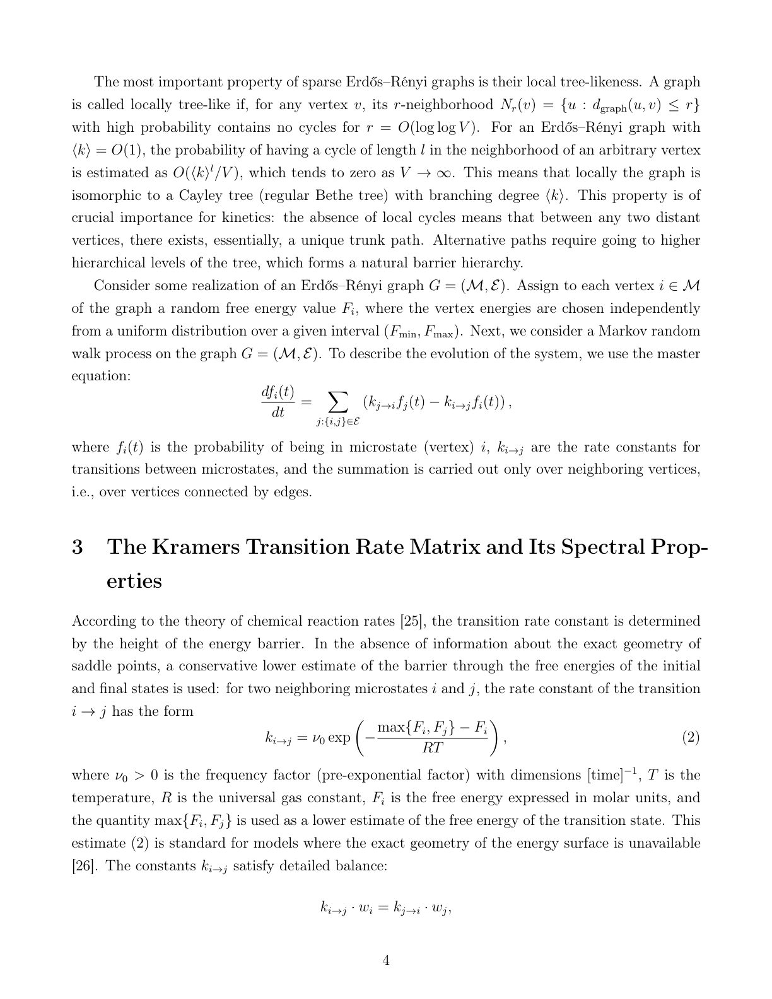
<figcaption class="paper-figure-caption"><b>Fig 3.</b> Low-resolution page preview, page 4</figcaption>
</figure>
<figure class="paper-figure-card">
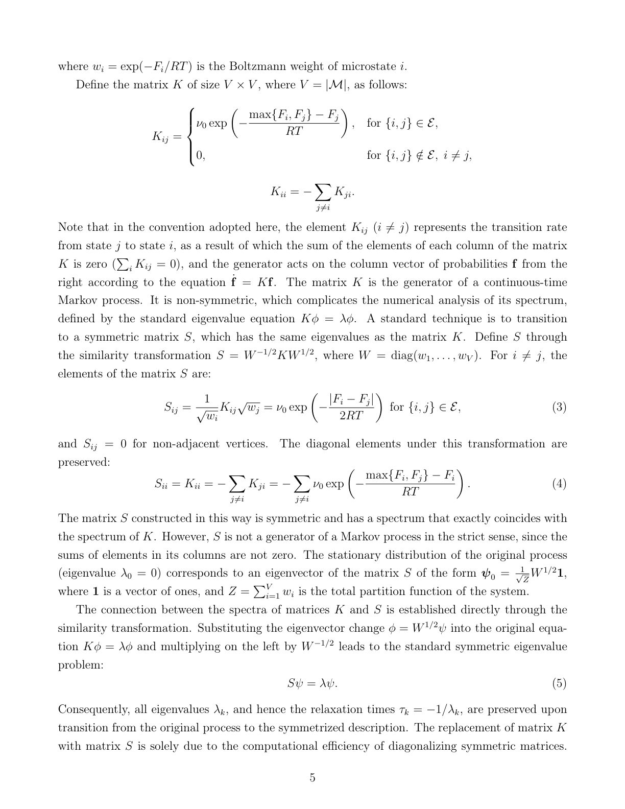
<figcaption class="paper-figure-caption"><b>Fig 4.</b> Low-resolution page preview, page 5</figcaption>
</figure>
<figure class="paper-figure-card">
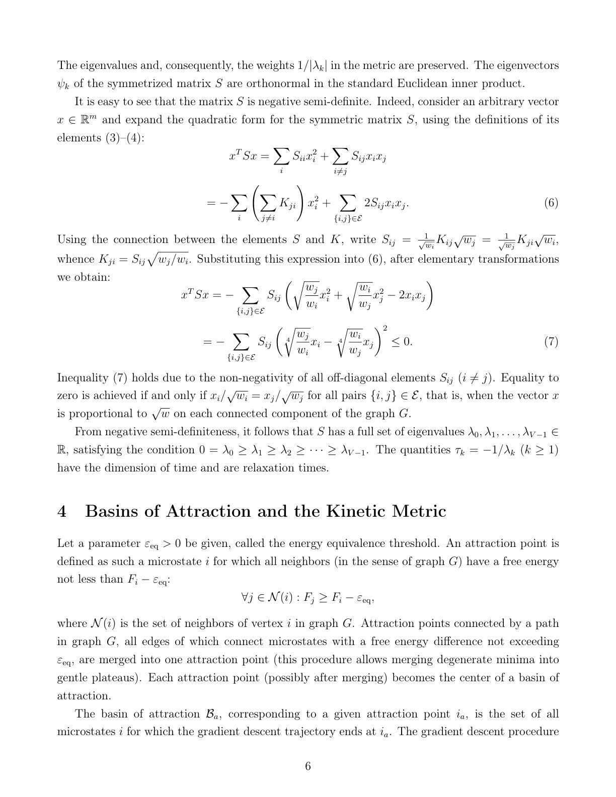
<figcaption class="paper-figure-caption"><b>Fig 5.</b> Low-resolution page preview, page 6</figcaption>
</figure>
</div>

<p><strong>Summary.</strong> This theoretical work analyzes the energy landscapes on sparse random graphs to determine if they possess a universal ultrametric organization. By comparing a kinetically derived metric with the ideal single-linkage ultrametric, the authors prove that this hierarchy emerges robustly when the energy differences are large. This suggests that local tree-like topology dictates the long-term dynamical structure of such complex systems.</p>
<p><strong>Why it may be interesting.</strong> The concept of energy landscape organization into an ultrametric structure is highly relevant for understanding complex dynamics, relaxation pathways, and metastable states in disordered quantum systems or molecular folding processes.</p>
<details>
<summary>Detailed structure</summary>
<p><strong>Main problem.</strong> The study investigates whether the energy landscape organization on sparse random graphs exhibits universal ultrametricity in the limit of large energy spreads.</p>
<p><strong>Main result.</strong> The kinetic metric between basins converges pointwise to the classical single-linkage ultrametric as the energy spread ($\Delta F$) tends to infinity, suggesting ultrametricity is a universal property for such systems.</p>
<p><strong>Method.</strong> The authors use spectral decomposition on a transformed rate matrix (Mahalanobis metric) and prove limit theorems comparing this kinetic distance to the minimax/single-linkage distance.</p>
<p><strong>Model / system.</strong> The system models energy landscapes defined by random free energies ($F_i$) assigned to vertices of sparse Erdős–Rényi graphs. Dynamics are governed by a continuous-time Markov process described by transition rates derived from these free energies.</p>
<p><strong>Key observables.</strong> Degree of nontrivial ultrametricity, kinetic Mahalanobis metric $D(B_a, B_b)$, and the single-linkage ultrametric $
ho(0)(B_a, B_b)$.</p>
<p><strong>Important parameters / regimes.</strong> Energy spread ($\Delta F$), Temperature ($T$), Graph connectivity (sparse/locally tree-like).</p>
<p><strong>Assumptions / limitations.</strong> The analysis assumes that for large $\Delta F$, the contribution from suboptimal paths is exponentially suppressed, allowing the kinetic metric to be dominated by the minimax path.</p>
<p><strong>Figures summary.</strong> Not specified in notes.</p>
<p><strong>Paper structure.</strong> The paper progresses from defining the Markovian dynamics and constructing a computable symmetric metric (Chunk 2), to establishing the mathematical link between this kinetic metric and the single-linkage ultrametric via limit theorems (Chunks 1 &amp; 3), culminating in a discussion of topological origins (Chunk 4).</p>
</details>
<details>
<summary>Abstract</summary>
<p>We investigate the ultrametric organization of energy landscapes defined on sparse random Erdős--Rényi graphs. Each graph vertex is assigned a random free energy from a uniform distribution over an interval of width $ΔF$, and the kinetics are modeled by a Markov process with Kramers transition rates. Using spectral decomposition of the rate matrix, we construct a kinetic Mahalanobis metric between basins of attraction. Computational experiments for graphs with $V=5000$ vertices and $E=5000$ edges show that the degree of nontrivial ultrametricity increases monotonically from $\approx42\%$ for $ΔF=10$ kJ/mol to $\approx96\%$ for $ΔF=1000$ kJ/mol. We prove a limit theorem: as $ΔF\to\infty$, the logarithmic asymptotics of this metric converge pointwise to the classical single-linkage ultrametric. For finite $ΔF$, corrections from suboptimal paths are exponentially suppressed with increasing $ΔF$, so that the metric becomes asymptotically ultrametric. Our results suggest that ultrametricity is a universal property of sparse, locally tree-like networks with rugged energy landscapes in the limit of large energy spreads.</p>
</details>
<p><sub><a href="#top">↑ back to top</a></sub></p>

<p><a id="paper-2607.15617"></a></p>
<h3 id="classical-codes-violate-the-conjectured-square-root-bound-for-quantum-random-access-codes"><a href="http://arxiv.org/abs/2607.15617v1">Classical codes violate the conjectured square-root bound for quantum random access codes</a></h3>
<p><strong>Authors:</strong> Kangqiao Liu<br>
<strong>Type:</strong> theory · <strong>Category:</strong> quantum information and computing · <strong>PDF:</strong> <a href="https://arxiv.org/pdf/2607.15617v1">https://arxiv.org/pdf/2607.15617v1</a><br>
<strong>Analysis basis:</strong> full PDF text, analyzed in chunks
<strong>Topic relevance:</strong> <code>entanglement &amp; information structure</code> <strong>1/5</strong> · <code>quantum measurements</code> <strong>1/5</strong></p>
<div class="figure-strip-hint">↔ Scroll figures horizontally</div>
<div class="paper-figures-scroll">
<figure class="paper-figure-card">
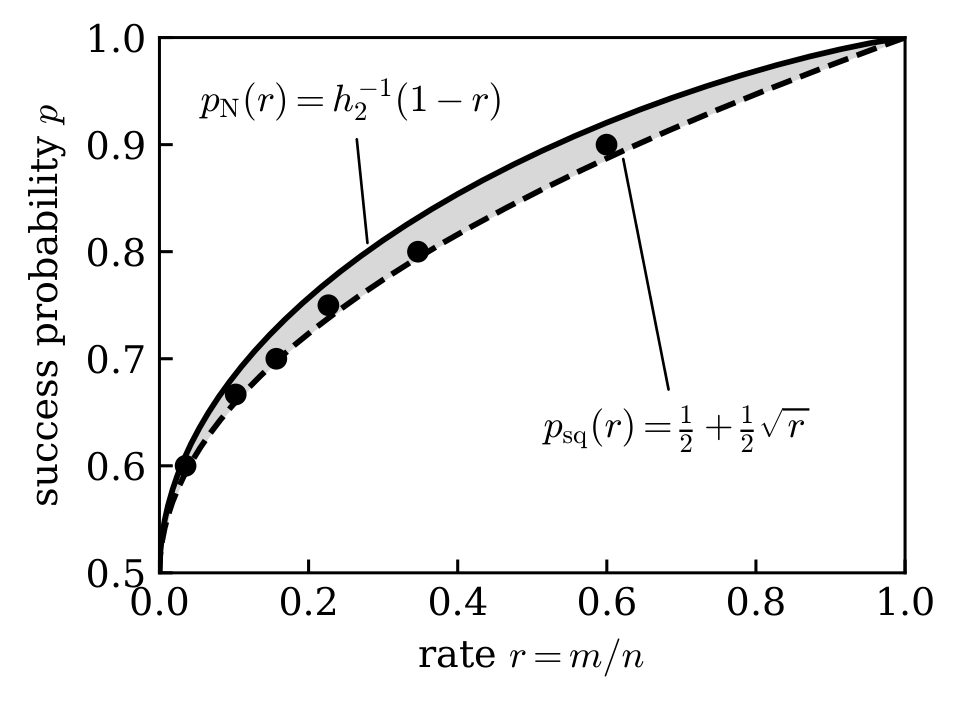
<figcaption class="paper-figure-caption"><b>Fig 1.</b> FIG. 1. Counterexamples fill the asymptotic interval between the conjectured and Nayak bounds.</figcaption>
</figure>
</div>

<p><strong>Summary.</strong> This work proves that classical random access codes can violate a conjectured square-root bound governing Quantum Random Access Codes (QRACs). By embedding these classical structures into the QRAC model, the authors construct explicit counterexamples showing the violation holds across an entire open interval of success probabilities. This reveals that the separation stems from the inclusion of classical coding rate limitations within the general quantum framework.</p>
<p><strong>Why it may be interesting.</strong> While focused on quantum information theory, the rigorous violation of an expected bound highlights fundamental limitations in current theoretical models for quantum communication protocols.</p>
<details>
<summary>Detailed structure</summary>
<p><strong>Main problem.</strong> The paper investigates whether a conjectured square-root bound for Quantum Random Access Codes (QRACs) holds true.</p>
<p><strong>Main result.</strong> Classical random access codes with private randomness violate this conjectured quantum bound, demonstrating that the classical coding rate is the source of separation from the theoretical limit.</p>
<p><strong>Method.</strong> The authors embed known classical RAC constructions into the general QRAC model using specific encoding and measurement assumptions. They then apply established achievability theorems for classical codes to construct explicit counterexamples.</p>
<p><strong>Model / system.</strong> The study centers on Quantum Random Access Codes (QRACs), which encode $n$ classical bits into $m$ qubits, aiming for a worst-case success probability $p$. The analysis compares the conjectured bound with bounds derived from information theory and classical coding limits.</p>
<p><strong>Key observables.</strong> Worst-case success probability ($p$), input length ($n$), number of qubits ($m$), and the rate $r = m/n$.</p>
<p><strong>Important parameters / regimes.</strong> The comparison is made across a full open interval for fixed compression rates $r \in (0, 1)$, showing violations for any $p$ between the conjectured bound and Nayak's bound.</p>
<p><strong>Assumptions / limitations.</strong> The analysis relies on embedding classical codes via diagonal encoding states and commuting decoding measurements. Results are often established in the asymptotic limit ($n 	o \infty$).</p>
<p><strong>Figures summary.</strong> Figure 1 illustrates that counterexamples fill an open rate window between the conjectured square-root bound and the information-theoretic Nayak bound.</p>
<p><strong>Paper structure.</strong> The paper first establishes the equivalence between certain QRAC statistics and classical RACs with private randomness. It then uses this embedding to construct explicit, asymptotically large counterexamples that violate the conjectured bound across a continuous range of success probabilities $p$.</p>
</details>
<details>
<summary>Abstract</summary>
<p>We consider whether every quantum random access code (QRAC) with density-operator encodings and arbitrary decoding measurements obeys the conjectured bound $p\leq(1+\sqrt{m/n})/2$, where $n$ classical bits are encoded into $m$ qubits and $p$ is the worst-case success probability. We find that classical random access codes with private randomness, which form a subclass of this QRAC model, violate the bound. We embed these classical codes as QRACs with diagonal encoding states and commuting decoding measurements, and construct pure-state realizations with identical decoding statistics. The achievability theorem of Ambainis, Nayak, Ta-Shma, and Vazirani then yields violations for every fixed $p\in(1/2,1)$ at sufficiently large input length. The counterexamples span the full open interval between the conjectured and Nayak bounds at each fixed compression rate. A finite-blocklength analysis further yields order-optimal logarithmic qubit scaling for a recovery bias scaling as $\sqrt{\log_2 n/n}$ with a sufficiently large prefactor. These results identify the classical coding rate as the source of the separation and motivate restricted bounds based on quantitative spectral properties of decoding measurements.</p>
</details>
<p><sub><a href="#top">↑ back to top</a></sub></p>

<p><a id="paper-2607.15465"></a></p>
<h3 id="efficient-routing-and-spectrum-allocation-in-arbitrary-flex-grid-entanglement-networks"><a href="http://arxiv.org/abs/2607.15465v1">Efficient routing and spectrum allocation in arbitrary flex-grid entanglement networks</a></h3>
<p><strong>Authors:</strong> Zachary Goisman, Matthew L. Stevens, Maxwell Goisman, Taman Truong, Gayane Vardoyan, Don Towsley, Nicholas A. Peters, Nageswara S. V. Rao, Guoliang Xue, Joseph M. Lukens<br>
<strong>Type:</strong> theory · <strong>Category:</strong> quantum information and computing · <strong>PDF:</strong> <a href="https://arxiv.org/pdf/2607.15465v1">https://arxiv.org/pdf/2607.15465v1</a><br>
<strong>Analysis basis:</strong> full PDF text, analyzed in chunks
<strong>Topic relevance:</strong> <code>entanglement &amp; information structure</code> <strong>1/5</strong> · <code>interference shaping light</code> <strong>1/5</strong></p>
<div class="figure-strip-hint">↔ Scroll figures horizontally</div>
<div class="paper-figures-scroll">
<figure class="paper-figure-card">
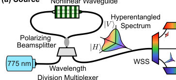
<figcaption class="paper-figure-caption"><b>Fig 1.</b> Fig. 1. Envisioned hardware components for generic (a) source and (b) user nodes, with wavelength-selective switches (WSSs) for arbitrary forwarding of input frequencies to and from adjacent nodes. Here both are shown with 𝑁= 3 edges, for a total of four WSSs including add-drop. All future topology figures assume these designs, but are simplified to single symbols for clarity.</figcaption>
</figure>
<figure class="paper-figure-card">
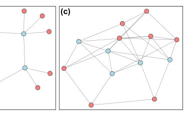
<figcaption class="paper-figure-caption"><b>Fig 2.</b> Fig. 2. Example network topologies solvable by the quantum RSA workflow: (a) star, (b) ring, and (c) densely connected. Sources are represented by blue circles, users by red circles.</figcaption>
</figure>
<figure class="paper-figure-card">

<figcaption class="paper-figure-caption"><b>Fig 3.</b> Fig. 3. Overview of proposed quantum RSA pipeline. (a) Example network topology with two sources (infinity signs within a circle) and six users (measure operation squares). Links are represented by two users with the same color: ℓ= 1 is teal, ℓ= 2 orange, and ℓ= 3 blue. (b) Phase 1: double Yen routing. This image shows one possible pair of paths from each source to the two users comprising the orange link. (c) Phase 2: APOPT spectrum allocation. From the pink 𝑠1 source, the teal link is allocated two channels and the blue link one channel, while the orange link receives a single channel from the green 𝑠2 source. For both sources, a total of 𝐾= 4 bin pairs are assumed. (d) Phase 3: CP-SAT...</figcaption>
</figure>
<figure class="paper-figure-card">
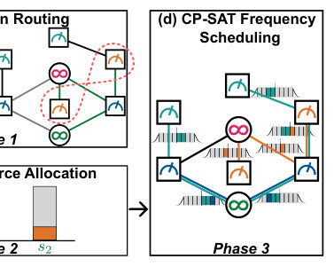
<figcaption class="paper-figure-caption"><b>Fig 4.</b> Figure 3(b) depicts an example of the 𝑁= 1 case (chosen for visual simplicity), where the pink and green lines denote the lowest-loss pair of paths for (𝑢𝐴2, 𝑢𝐵2) to the sources 𝑠1 and 𝑠2,</figcaption>
</figure>
<figure class="paper-figure-card">
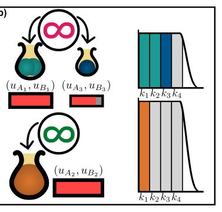
<figcaption class="paper-figure-caption"><b>Fig 5.</b> Fig. 4. Depiction of the EFA problem (Phase 2 of Fig. 3) in terms of a knapsack problem. (a) An example inefficient case, where source 𝑠1 allocates a channel that maximally fills the knapsack of the blue link ℓ= 3, preventing it from further filling the teal link ℓ= 1, while source 𝑠2 assigns all four channel pairs to its single orange link ℓ= 2. (b) An improved solution in which the flux of 𝑠1 is reduced such that three channels spread across its two links, and the flux of 𝑠2 is increased to require only one channel instead of all four. In all examples, the size of the knapsack and corresponding slider symbolizes the maximum flux each link can receive, the size of the balls stand in for...</figcaption>
</figure>
</div>

<p><strong>Summary.</strong> This paper presents an efficient, three-stage pipeline to solve the complex routing and spectrum allocation problem in large-scale quantum networks using hyperentangled photons. By combining classical optimization tools like Yen's algorithm, APOPT, and CP-SAT, the authors achieve significant improvements in speed and accuracy over previous methods. This workflow offers a practical heuristic for deploying broadband entanglement distribution across existing fiber optic infrastructure.</p>
<p><strong>Why it may be interesting.</strong> This work directly tackles the engineering bottleneck of scaling quantum networks by providing a computationally efficient framework for resource management in existing optical infrastructure.</p>
<details>
<summary>Detailed structure</summary>
<p><strong>Main problem.</strong> The paper addresses the challenge of efficiently allocating frequency spectrum and routing entanglement links for large-scale, repeater-less quantum networks.</p>
<p><strong>Main result.</strong> A novel three-stage heuristic pipeline was developed that significantly outperforms prior genetic algorithm methods in speed and accuracy for optimizing broadband entanglement distribution.</p>
<p><strong>Method.</strong> The approach combines Yen's algorithm for pathfinding, the Advanced Process Optimizer (APOPT) for rate maximization under fidelity constraints, and a CP-SAT solver for contention-free frequency bin assignment.</p>
<p><strong>Model / system.</strong> The model describes an arbitrary quantum network using hyperentangled photons in a flex-grid WDM setup. Links are characterized by fidelity ($F_\ell$) and coincidence rates ($R_\ell$), which depend on allocated frequencies and optical losses.</p>
<p><strong>Key observables.</strong> Fidelity ($F_\ell$), total coincidence rate ($R_\ell$), network utility ($U$), and solution runtime.</p>
<p><strong>Important parameters / regimes.</strong> Source flux ($\mu_{m\ell}$), optical losses ($\eta_{A\ell}, \eta_{B\ell}$), and the number of available frequency bins ($K$).</p>
<p><strong>Assumptions / limitations.</strong> The model assumes that channel distortion effects are fully compensated, and it focuses on the resource allocation aspects applicable to existing lightwave infrastructure.</p>
<p><strong>Figures summary.</strong> Figures illustrate the hardware components (WSSs) and detail the three-stage pipeline: pathfinding (Double Yen), spectrum optimization (APOPT), and frequency scheduling (CP-SAT) applied to example topologies like ring or Manhattan networks.</p>
<p><strong>Paper structure.</strong> The paper is structured around defining the NP-hard Quantum Resource Allocation problem, proposing a novel three-stage heuristic pipeline (Route Finding $
ightarrow$ Spectrum Allocation $
ightarrow$ Bin Assignment), and validating this workflow on representative network topologies.</p>
</details>
<details>
<summary>Abstract</summary>
<p>As practical quantum networks approach large-scale deployment, the need for efficient user-to-user frequency allocation is increasing, yet current approaches only provide partial solutions to the routing and spectrum allocation problem for an arbitrary quantum network. We address this challenge for repeater-less flex-grid quantum networks based on hyperentangled photons using an efficient three-stage pipeline combining leading tools in classical networking with recent advances in numerical optimization. First, double instantiations of Yen's algorithm obtain low-loss route candidates between each pair of users and the entanglement sources. Second, the advanced process optimizer (APOPT) obtains frequency channel allocations that maximize distribution rates under fidelity constraints. Finally, the constraint programming solver using satisfiability methods (CP-SAT) assigns specific frequency bins to each link, ensuring that there is no contention between frequencies from different sources. We numerically demonstrate this approach on a representative ring network and a Manhattan incumbent local exchange carrier topology, realizing significant improvements over prior genetic algorithm approaches in speed, accuracy, and scalability. Overall, this pipeline provides an efficient heuristic workflow for optimizing broadband entanglement distribution, applicable to arbitrarily connected quantum networks integrated within the existing lightwave infrastructure.</p>
</details>
<p><sub><a href="#top">↑ back to top</a></sub></p>

<p><a id="paper-2607.15700"></a></p>
<h3 id="growth-of-quartet-correlations-in-neutron-rich-tellurium-isotopes-within-quartet-bardeen-cooper-schrieffer-theory"><a href="http://arxiv.org/abs/2607.15700v1">Growth of quartet correlations in neutron-rich Tellurium isotopes within quartet Bardeen-Cooper-Schrieffer theory</a></h3>
<p><strong>Authors:</strong> Yixin Guo, Hiroyuki Sagawa, Masaaki Kimura<br>
<strong>Type:</strong> theory · <strong>Category:</strong> quantum gases · <strong>PDF:</strong> <a href="https://arxiv.org/pdf/2607.15700v1">https://arxiv.org/pdf/2607.15700v1</a><br>
<strong>Analysis basis:</strong> full PDF text, analyzed in chunks
<strong>Topic relevance:</strong> <code>Keldysh / 2PI / non-Gaussian methods</code> <strong>1/5</strong></p>
<div class="figure-strip-hint">↔ Scroll figures horizontally</div>
<div class="paper-figures-scroll">
<figure class="paper-figure-card">
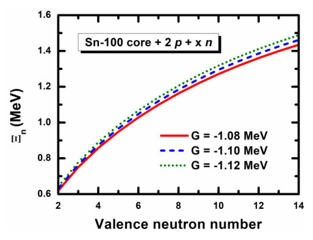
<figcaption class="paper-figure-caption"><b>Fig 1.</b> FIG. 1. The degeneracy-weighted neutron gap Ξn as a function of valence neutron number outside the 100Sn core.</figcaption>
</figure>
<figure class="paper-figure-card">
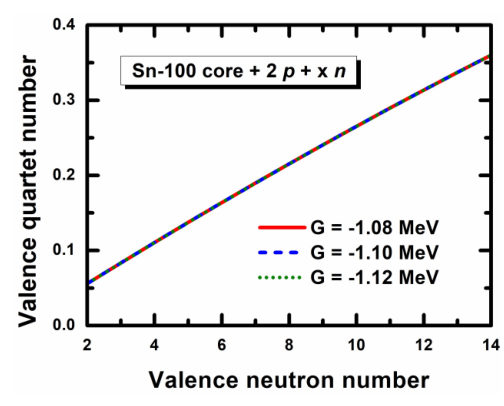
<figcaption class="paper-figure-caption"><b>Fig 2.</b> FIG. 2. The valence quartet number as a function of valence neutron number out of 100Sn core.</figcaption>
</figure>
<figure class="paper-figure-card">
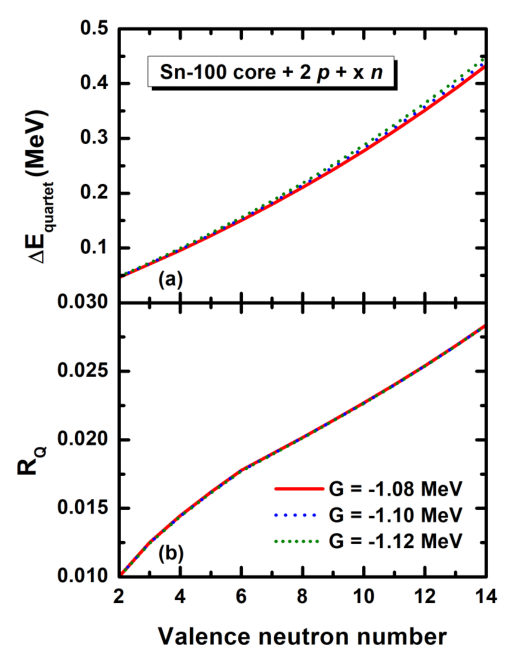
<figcaption class="paper-figure-caption"><b>Fig 3.</b> FIG. 3. (a) Quartet-induced energy gain ∆Equartet = EqBCS noQ −EqBCS full as a function of valence neutron number out of the 100Sn core. (b) Corresponding fraction RQ = ∆Equartet/Ecorr, where Ecorr = Eref −EqBCS full and Eref is the uncorrelated filling energy in the same valence space.</figcaption>
</figure>
<figure class="paper-figure-card">
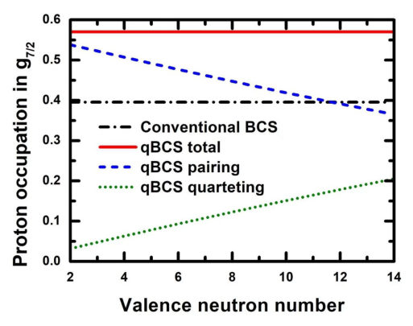
<figcaption class="paper-figure-caption"><b>Fig 4.</b> FIG. 4. Proton occupation fraction of the 1g7/2 orbit as a function of valence neutron number out of the 100Sn core. The dash-dotted line denotes the conventional BCS result. The solid line shows the total qBCS occupation, while the dashed and dotted lines show its pair-like and quartet-induced contributions, respectively. The pair-like and quartet-induced contributions are defined in Eqs. (44) and (45), respectively.</figcaption>
</figure>
<figure class="paper-figure-card">
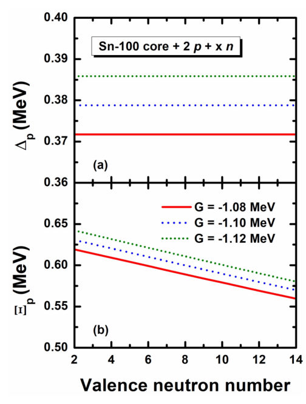
<figcaption class="paper-figure-caption"><b>Fig 5.</b> FIG. 5. Proton pairing quantities as functions of valence neutron number out of the 100Sn core. (a) Conventional BCS proton gap ∆p, obtained from the factorized like-particle BCS reference. (b) Quartet BCS proton gap-like quantity Ξp. The three curves correspond to G = −1.08, −1.10, and −1.12 MeV.</figcaption>
</figure>
</div>

<p><strong>Summary.</strong> This theoretical work applies the Quartet BCS framework to model correlations in neutron-rich Tellurium isotopes. It demonstrates that increasing valence neutrons significantly enhances quartet admixtures and alters proton orbital occupation by shifting weight from conventional pair configurations to higher-order quartet terms. This provides a microscopic understanding of enhanced superfluidity in exotic nuclei.</p>
<p><strong>Why it may be interesting.</strong> The explicit inclusion of four-body (quartet) pairing amplitudes provides a mechanism to enhance correlation effects beyond standard BCS theory, offering insights into exotic nuclear superfluidity analogous to pairing in ultracold Fermi gases.</p>
<details>
<summary>Detailed structure</summary>
<p><strong>Main problem.</strong> The study investigates how quartet correlations develop in neutron-rich Tellurium isotopes, extending beyond standard BCS pairing descriptions.</p>
<p><strong>Main result.</strong> Increasing the number of valence neutrons enhances the quartet admixture in the correlated state and causes a redistribution of proton weight from pair-like to quartet configurations.</p>
<p><strong>Method.</strong> The authors solve variational equations derived from the Quartet Bardeen-Cooper-Schrieffer (qBCS) theory, treating four-body pairing amplitudes explicitly.</p>
<p><strong>Model / system.</strong> The system models valence protons and neutrons in neutron-rich Te isotopes, using a ${}^{100}	ext{Sn}$ core and considering particles in the $2d_{5/2} \oplus 1g_{7/2}$ model space with an isovector pairing interaction.</p>
<p><strong>Key observables.</strong> Valence quartet number ($N_Q$), condensed quartet component, proton occupation fraction of the $1g_{7/2}$ orbit ($  ext{P}<em ext_Quartet="ext{Quartet">{\pi,g}$), and quartet-induced energy gain ($\Delta E</em>$).}</p>
<p><strong>Important parameters / regimes.</strong> The analysis scans the isotopic chain from $^{104}	ext{Te}$ to $^{116}	ext{Te}$, constrained by empirical neutron pairing gaps.</p>
<p><strong>Assumptions / limitations.</strong> The theory assumes a charge-independent isovector pairing interaction and neglects isoscalar proton-neutron pairing correlations for simplicity in the initial analysis.</p>
<p><strong>Figures summary.</strong> Figures illustrate the monotonic increase of $N_Q$ and $\Delta E_{	ext{Quartet}}$ with neutron number, and show how the total proton occupation fraction ($ ext{P}_{\pi,g}$) is composed of pair-like and quartet contributions.</p>
<p><strong>Paper structure.</strong> The paper establishes the qBCS framework by solving variational equations for pairing amplitudes. It then calculates key observables like $N_Q$ and $\Delta E_{	ext{Quartet}}$ across an isotopic chain to show increasing correlations, followed by a detailed analysis of proton orbital occupation showing weight redistribution.</p>
</details>
<details>
<summary>Abstract</summary>
<p>Quartet correlations in neutron-rich Te isotopes are investigated within the quartet Bardeen-Cooper-Schrieffer (BCS) framework. Taking \(^{100}\)Sn as an inert core, we consider two valence protons and valence neutrons occupying the \(2d_{5/2}\oplus1g_{7/2}\) model space, and solve the quartet BCS variational equations with a charge-independent isovector pairing interaction. The effective pairing strength is constrained from empirical neutron pairing gaps in the Te isotopic chain. We find that the valence quartet number increases as the valence neutron number is enlarged from \(N_{\rm val}=2\) to \(14\). The same increasing behavior is also found for the condensed quartet component. The proton occupation of the \(1g_{7/2}\) orbit is strongly enhanced relative to the conventional like-particle BCS reference and is driven close to the degeneracy-weighted limit. These results suggest that additional valence neutrons enhance the quartet admixture in the correlated quartet BCS state, while redistributing the fixed proton weight from pair-like configurations to quartet configurations.</p>
</details>
<p><sub><a href="#top">↑ back to top</a></sub></p>

<p><a id="paper-2607.15691"></a></p>
<h3 id="kinetic-theory-for-the-shear-viscosity-of-dense-binary-dipolar-fluid-mixtures"><a href="http://arxiv.org/abs/2607.15691v1">Kinetic Theory for the Shear Viscosity of Dense Binary Dipolar Fluid Mixtures</a></h3>
<p><strong>Authors:</strong> Christopher Devik Fjeldstad, Roberto Troncoso, Astrid S. de Wijn<br>
<strong>Type:</strong> theory · <strong>Category:</strong> statistical mechanics · <strong>PDF:</strong> <a href="https://arxiv.org/pdf/2607.15691v1">https://arxiv.org/pdf/2607.15691v1</a><br>
<strong>Analysis basis:</strong> full PDF text, analyzed in chunks
<strong>Topic relevance:</strong> <code>Keldysh / 2PI / non-Gaussian methods</code> <strong>1/5</strong></p>
<div class="figure-strip-hint">↔ Scroll figures horizontally</div>
<div class="paper-figures-scroll">
<figure class="paper-figure-card">
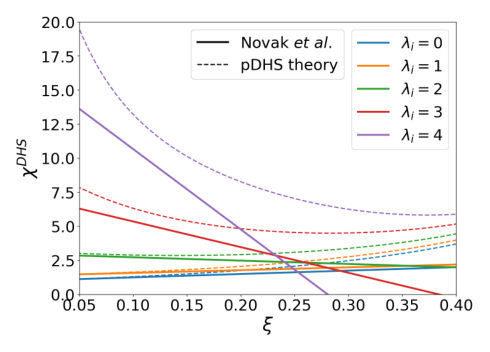
<figcaption class="paper-figure-caption"><b>Fig 1.</b> FIG. 1. Prediction for χDHS i using the cluster expansion de- rived by Novak et al. [8] in the pure limit (full lines) along with, for comparison, the equivalent prediction using pDHS theory for pure fluids [7] (dashed lines). At low density, as long as λi ≲2, the Novak et al. prediction is very similar to pDHS theory. However, the higher-order terms in the density become significant, and Novak et al.’s expansion for mixtures fails.</figcaption>
</figure>
<figure class="paper-figure-card">
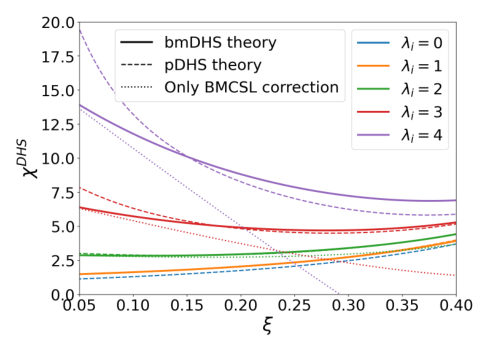
<figcaption class="paper-figure-caption"><b>Fig 2.</b> FIG. 2. Prediction for χDHS i in the pure limit: fully corrected expression for χij, denoted bmDHS theory (full lines), the equivalent prediction using pDHS theory for pure fluids [7] (dashed lines), and only the BMCSL correct for the hard- sphere contribution (dotted lines). Although some improve- ment can be seen in the latter, especially for weak dipoles, it still fails when λi = 4. In contrast, bmDHS theory, which uses both corrections, shows far better agreement with pDHS theory, although very strong dipoles still present an quan- titative issue. Crucially, bmDHS theory satisfies the sanity requirement that χDHS i &gt; 0 for all densities.</figcaption>
</figure>
<figure class="paper-figure-card">
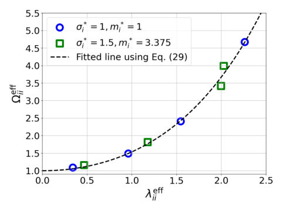
<figcaption class="paper-figure-caption"><b>Fig 3.</b> FIG. 4. The values calculated for Ωeff ii are plotted as a function of λeff ii for both the small particle (circles) and large particle (squares) pure fluids (σ∗ i = 1 and m∗ i = 1, and σ∗ i = 1.5 and m∗ i = 3.375 respectively). The figure also includes the curve (dashed line) which results from fitting Eq. (30) to the pure fluid data.</figcaption>
</figure>
<figure class="paper-figure-card">
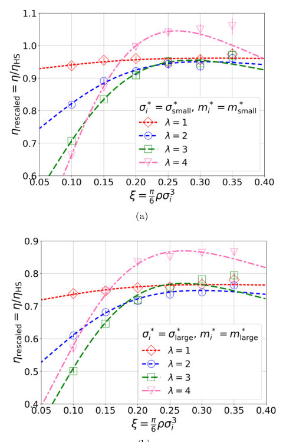
<figcaption class="paper-figure-caption"><b>Fig 4.</b> FIG. 3. Rescaled shear viscosity from simulations for pure DHS fluids with λ = 1, 2, 3 and 4. The rescaling uses the Enskog expression for a pure hard-sphere fluid at the same volume fraction with σ∗ i = 1, mass m∗ i = 1, and reduced tem- perature T ∗= 1.5. The predictions are made using bmDHS theory for fluids with small particles (σ∗ i = 1, m∗ i = 1) (a) and large particle fluids (σ∗ i = 1.5, m∗ i = 3.375) (b). The associated fit parameters can be found in tables I.</figcaption>
</figure>
<figure class="paper-figure-card">
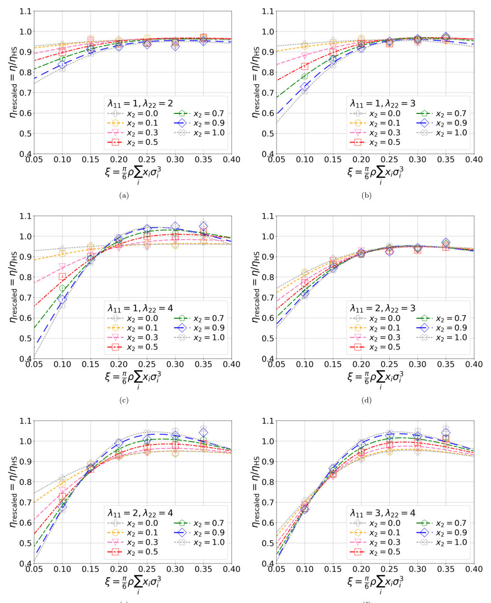
<figcaption class="paper-figure-caption"><b>Fig 5.</b> FIG. 5. Rescaled shear viscosity from simulations of mixtures where both components have equally sized cores and (a) (λ11, λ22) = (1, 2), (b) (λ11, λ22) = (1, 3), (c) (λ11, λ22) = (1, 4), (d) (λ11, λ22) = (2, 3), (e) (λ11, λ22) = (2, 4), and (f) (λ11, λ22) = (3, 4), along with the predicted shear viscosity of the binary DHS fluid mixtures using bmDHS theory. The rescaling uses the Enskog expression for a pure hard-sphere fluid at the same volume fraction with σ∗ i = 1, mass m∗ i = 1, and reduced temperature T ∗= 1.5.</figcaption>
</figure>
</div>

<p><strong>Summary.</strong> This paper develops an advanced kinetic theory for calculating the shear viscosity of binary mixtures of dipolar hard spheres. By extending Enskog-Thorne theory and incorporating structural corrections, the authors derive an accurate expression that matches molecular dynamics simulations across a range of densities. It provides a robust theoretical tool for understanding transport properties in complex, strongly interacting classical fluids.</p>
<p><strong>Why it may be interesting.</strong> While focused on classical fluids, the rigorous application of kinetic theory and the handling of long-range, anisotropic interactions (dipoles) in a dense fluid context provide valuable methodological insights applicable to complex quantum many-body systems where simple approximations fail.</p>
<details>
<summary>Detailed structure</summary>
<p><strong>Main problem.</strong> The primary goal is constructing a kinetic theory for the shear viscosity of dense binary fluid mixtures composed of strongly-interacting dipolar hard spheres.</p>
<p><strong>Main result.</strong> The derived expression successfully captures the density and composition dependence of the shear viscosity up to packing fractions around 0.3 without requiring mixture-derived fit parameters, showing good agreement with molecular dynamics simulations.</p>
<p><strong>Method.</strong> The approach extends Enskog-Thorne theory, building upon Pousaneh and de Wijn's work for pure dipolar fluids by incorporating structural corrections derived from cluster expansions and resumming the residual dipolar contributions exponentially.</p>
<p><strong>Model / system.</strong> The system modeled is a binary mixture of Dipolar Hard Spheres (DHS). The interactions include both hard-core repulsion and long-range dipole-dipole forces, making it a complex many-body classical fluid system.</p>
<p><strong>Key observables.</strong> Shear viscosity ($\eta$), partial pair distribution functions ($\chi_{ij}$), and effective collision cross sections ($\Omega_{	ext{bmDHS}, ij}$).</p>
<p><strong>Important parameters / regimes.</strong> Packing fraction ($\xi$), dipolar coupling constants ($\lambda_{ii}$, $\lambda_{jj}$), and particle sizes ($\sigma_i$). The theory is tested in regimes where dipolar energy can be much larger than $k_B T$.</p>
<p><strong>Assumptions / limitations.</strong> The theory assumes momentum transfer is dominated by hard-sphere core collisions, allowing the use of Enskog-Thorne formalism. It relies on approximations like replacing the hard-sphere contribution with BMCSL results and resumming dipolar terms exponentially.</p>
<p><strong>Figures summary.</strong> Figures compare the predicted shear viscosity ($\eta$) for mixtures with equally sized cores and those with differently sized cores across various combinations of dipolar coupling constants, showing good agreement with simulation data up to $\xi \approx 0.3$.</p>
<p><strong>Paper structure.</strong> The paper develops the theory by first establishing the framework based on Enskog-Thorne theory for binary mixtures. It then details the necessary structural inputs ($\chi_{ij}$) by correcting cluster expansion results, leading to the final expression for shear viscosity, which is validated against molecular dynamics simulations.</p>
</details>
<details>
<summary>Abstract</summary>
<p>We construct a kinetic theory for the shear viscosity of dense binary fluid mixtures of strongly-interacting dipolar hard spheres. We derive an expression for the pairwise correlations in the binary mixtures that is accurate up to packing fractions around 0.35. The approach is based on Enskog-Thorne theory, and inspired by the theory for dense pure fluids developed by Pousaneh and de Wijn. It relies on effective coupling parameters obtained from the pure fluids combined with mixing rules and a heuristic expression for the collision integral. We compare our results to viscosities obtained numerically from molecular-dynamics simulations of dipolar hard-sphere fluids. Our expression for the shear viscosity of the binary mixtures captures the density and composition dependent behavior of the binary dipolar fluids up to packing fraction of $ξ\lesssim 0.3$ without any mixture-derived fit parameters.</p>
</details>
<p><sub><a href="#top">↑ back to top</a></sub></p>

<p><a id="paper-2607.15763"></a></p>
<h3 id="machine-learning-test-of-the-single-ion-model-for-math633math-excitations-in-cuprates"><a href="http://arxiv.org/abs/2607.15763v1">Machine-learning test of the single-ion model for $dd$ excitations in cuprates</a></h3>
<p><strong>Authors:</strong> Maryia Zinouyeva, Leonardo Martinelli, Riccardo Arpaia, Nicholas B. Brookes, Daniele Di Castro, Kurt Kummer, Floriana Lombardi, Giacomo Merzoni, Francesco Rosa, Alessandro Tarasio, Enrico Tassi, Flora Yakhou-Harris, Ezio Puppin, Marco Moretti Sala, Giacomo Ghiringhelli<br>
<strong>Type:</strong> both · <strong>Category:</strong> strongly correlated electrons · <strong>PDF:</strong> <a href="https://arxiv.org/pdf/2607.15763v1">https://arxiv.org/pdf/2607.15763v1</a><br>
<strong>Analysis basis:</strong> full PDF text, analyzed in chunks
<strong>Topic relevance:</strong> <code>methods for driven-dissipative</code> <strong>1/5</strong></p>
<div class="figure-strip-hint">↔ Scroll figures horizontally</div>
<div class="paper-figures-scroll">
<figure class="paper-figure-card">
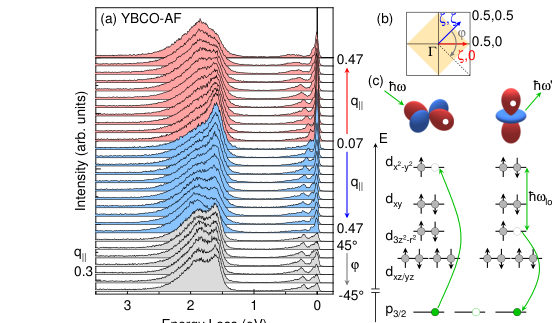
<figcaption class="paper-figure-caption"><b>Fig 1.</b> FIG. 1. (a) RIXS spectra at the Cu L3 edge for YBCO-AF, with σ-polarized incident light. The scans along the (ζ,0) and (ζ,ζ) directions were measured on the 50-nm-thick sam- ple, whereas the azimuthal φ scan at fixed q∥= 0.3 r.l.u. was measured on the 100-nm-thick sample. The corresponding re- gions of reciprocal space are shown in (b). (c) Schematic of the dd excitation process at the Cu L3 edge, showing the crystal- field splitting of the Cu 3d orbitals. Within the single-ion model, the relative dd excitation intensities are determined by the scattering geometry, while the energies are extracted from the spectral analysis.</figcaption>
</figure>
<figure class="paper-figure-card">
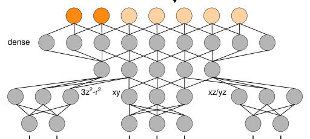
<figcaption class="paper-figure-caption"><b>Fig 2.</b> FIG. 3. (a) Four simulated spectra corresponding to different experimental geometries, sharing the dd excitation energies (dashed lines), linewidth and α (not shown). (b) Construction of three input variants. In each variant, one selected dd peak is rescaled to a common intensity, and are then reordered ac- cording to the increasing area of another peak: fixed A3z2−r2 with increasing Axy (v1, gray), fixed A3z2−r2 with increas- ing Axz/yz (v2, blue), and fixed Axy with increasing A3z2−r2 (v3, red). (c) Network input construction. For each geome- try index k = 1, . . . , 4, we form one input by taking, for each variant v = 1, 2, 3, the spectrum at index k, I(v) k (E), together with its...</figcaption>
</figure>
<figure class="paper-figure-card">
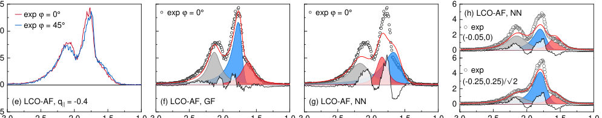
<figcaption class="paper-figure-caption"><b>Fig 3.</b> FIG. 4. (a) RIXS spectra of YBCO-AF measured at φ = 0◦and 45◦with σ-polarized incident light. (b) Global fit (GF) of a YBCO-AF RIXS spectrum at φ = 0◦. The black curve with white filling shows the difference between the experimental data and the total fit. (c,d) Neural-network (NN) results for the φ scan and (ζ, 0), (ζ, ζ) scans. The NN predicts the peak energies, total FWHMs, and α. These parameters are used to reconstruct the spectrum within the single-ion line-shape model; a common Gaussian width is adjusted for all peaks, while the Lorentzian width of each peak is fixed by the NN-predicted total FWHMs. (e-h) Same as panels (a-d), but for LCO-AF.</figcaption>
</figure>
</div>

<p><strong>Summary.</strong> This work analyzes RIXS spectra of cuprates using the single-ion model, comparing results obtained via conventional global fitting and advanced neural network analysis. While the ML approach successfully validates the model for $  ext{YBa}<em 6>2  ext{Cu}_3   ext{O}</em>_4$ suggest that describing high-energy excitations requires incorporating physics beyond a purely local picture.}$, discrepancies found in $   ext{La}_2   ext{CuO</p>
<p><strong>Why it may be interesting.</strong> The application of ML/NN techniques to interpret complex spectroscopic data from strongly correlated materials like cuprates is highly relevant. The comparison between different fitting methods provides a rigorous test of theoretical models against experimental reality.</p>
<details>
<summary>Detailed structure</summary>
<p><strong>Main problem.</strong> The study aims to test the applicability of the local single-ion model for describing $dd$ excitations in cuprate superconductors using Resonant Inelastic X-ray Scattering (RIXS) spectra.</p>
<p><strong>Main result.</strong> Agreement between machine learning and conventional fitting methods validates the single-ion picture for YBCO, while discrepancies observed in $   ext{La}_2   ext{CuO}_4$ suggest that additional physics beyond a purely local model is necessary.</p>
<p><strong>Method.</strong> The analysis combines experimental RIXS data fitting (Global Fitting) with advanced machine learning techniques (Convolutional Neural Networks) trained on synthetic spectra derived from the single-ion Hamiltonian.</p>
<p><strong>Model / system.</strong> The system under study is cuprates ($   ext{YBa}<em 6>2  ext{Cu}_3   ext{O}</em>\ 3d$ orbitals. The theoretical framework employed is the local single-ion model.}$ and $   ext{La}_2   ext{CuO}_4$), focusing on $dd$ excitations within the $  ext{Cu</p>
<p><strong>Key observables.</strong> Excited state energies ($E_{xy}$, $E_{3z^2-r^2}$, $E_{xz/yz}$), Full Width at Half Maximum (FWHM), and asymmetry parameters ($\alpha$) derived from RIXS spectra.</p>
<p><strong>Important parameters / regimes.</strong> The analysis depends on scattering geometry, polarization channels ($\sigma 	o \sigma$, etc.), and the distinction between spin-flip ($sf$) and non-spin-flip ($nsf$) contributions.</p>
<p><strong>Assumptions / limitations.</strong> Key assumptions include assuming negligible superexchange interaction (equal excitation energy for spin-flip/non-spin-flip) and relying on the single-ion model to describe high-energy excitations.</p>
<p><strong>Figures summary.</strong> Figures illustrate RIXS spectra measurements under varying scattering geometries ($\phi$ scans, $(\zeta, 0), (\zeta, \zeta)$) comparing experimental data against predictions from both global fitting and neural network models for YBCO and LCO.</p>
<p><strong>Paper structure.</strong> The paper progresses by first establishing the physical problem using RIXS data on two cuprates. It then develops a robust analysis pipeline incorporating machine learning to analyze these spectra, culminating in comparisons that validate the model in one case (YBCO) while highlighting its limitations in another (LCO).</p>
</details>
<details>
<summary>Abstract</summary>
<p>We investigate $dd$ excitations in Resonant Inelastic X-ray Scattering spectra of YBa$_2$Cu$_3$O$_6$ and La$_2$CuO$_4$ using the local single-ion model. The data are analyzed by conventional global fitting and by a convolutional neural network trained within the same theoretical framework. For YBa$_2$Cu$_3$O$_6$, the excited state energies obtained with the two methods coincide, leading to the $xy$, $3z^2-r^2$, $xz/yz$ sequence for increasing energy. This result validates the use of machine learning tools for the analysis of RIXS spectra dominated by $dd$ excitations. By contrast, for La$_2$CuO$_4$, the two methods do not converge to a single solution, revealing the limitations of the single-ion model in describing $dd$ excitations in cuprates and pointing to the role of additional contributions beyond a purely local picture in shaping high-energy excitations.</p>
</details>
<p><sub><a href="#top">↑ back to top</a></sub></p>

<p><a id="paper-2607.16096"></a></p>
<h3 id="object-relative-ultraviolet-weighting-of-electromagnetic-modes-and-one-loop-ultraviolet-finiteness-in-quantum-electrodynamics"><a href="http://arxiv.org/abs/2607.16096v1">Object-relative ultraviolet weighting of electromagnetic modes and one-loop ultraviolet finiteness in quantum electrodynamics</a></h3>
<p><strong>Authors:</strong> Christian Rembe<br>
<strong>Type:</strong> theory · <strong>Category:</strong> other · <strong>PDF:</strong> <a href="https://arxiv.org/pdf/2607.16096v1">https://arxiv.org/pdf/2607.16096v1</a><br>
<strong>Analysis basis:</strong> full PDF text, analyzed in chunks
<strong>Topic relevance:</strong> <code>Keldysh / 2PI / non-Gaussian methods</code> <strong>1/5</strong></p>
<div class="figure-strip-hint">↔ Scroll figures horizontally</div>
<div class="paper-figures-scroll">
<figure class="paper-figure-card">
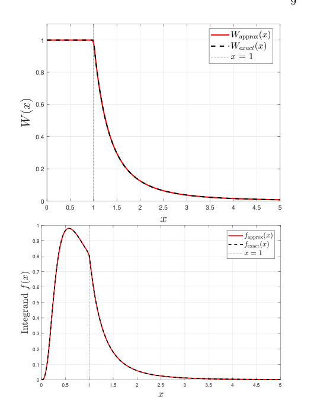
<figcaption class="paper-figure-caption"><b>Fig 1.</b> FIG. 1. Comparison of the piecewise effective mode weight- ing W(x) with the differentiable approximation Wapp(x; a) with a = 100 for a representative smoothing parameter (top), and comparison of the corresponding weighted kernel f(x) entering the one-loop matching integral (bottom). The ver- tical line at x = 1 marks the crossover scale. The figure shows that the smooth approximation preserves the infrared plateau and the ultraviolet x−3 asymptotics, while modifying the physically relevant kernel only in a narrow region around the crossover.</figcaption>
</figure>
</div>

<p><strong>Summary.</strong> This theoretical paper proposes a novel method to regularize ultraviolet divergences in Quantum Electrodynamics by applying an object-relative weighting factor to internal electromagnetic modes. This weighting, dependent on the mode frequency measured in the interaction's rest frame, successfully makes several key one-loop calculations finite while maintaining Ward identity consistency. It suggests that localization effects can be modeled through such scale-dependent modifications of vacuum contributions.</p>
<p><strong>Why it may be interesting.</strong> Although focused on QED renormalization, the concept of introducing an 'effective' scale dependence into field theory calculations to tame UV divergences echoes themes in effective field theories relevant to AMO physics when considering short-range interactions or high-energy cutoffs.</p>
<details>
<summary>Detailed structure</summary>
<p><strong>Main problem.</strong> The work investigates whether localized electromagnetic interactions can be modeled by introducing an effective, object-relative ultraviolet weighting of internal quantum electrodynamics (QED) modes.</p>
<p><strong>Main result.</strong> Applying this specific weighting successfully renders selected one-loop QED contributions UV finite while preserving a restricted form of the Ward identity. The results suggest that different physical observables may probe distinct effective localization scales.</p>
<p><strong>Method.</strong> The authors propose an ansatz for the weighting factor, $W(k; k_c)$, which depends on the object-relative covariant mode variable $u \cdot k$, and test its consistency by calculating one-loop corrections to key QED processes.</p>
<p><strong>Model / system.</strong> The theoretical framework is Quantum Electrodynamics (QED), focusing on how internal electromagnetic modes behave when interactions are assumed to be highly localized relative to a characteristic scale, $l_c$.</p>
<p><strong>Key observables.</strong> Anomalous magnetic moment, Bethe-type low-energy Lamb shift estimate, and the Casimir effect.</p>
<p><strong>Important parameters / regimes.</strong> Characteristic localization scale ($l_c$) leading to wave number $k_c$, and the object-relative mode frequency measured in the interaction's rest frame ($u \cdot k$).</p>
<p><strong>Assumptions / limitations.</strong> The weighting is introduced as a heuristic ansatz, not derived from an underlying action. The consistency check is restricted to one-loop diagrams where the weighting acts as a common scalar factor.</p>
<p><strong>Paper structure.</strong> The paper introduces the problem of modeling localized interactions via mode weighting, develops the object-relative covariant weighting ansatz based on heuristic arguments, proves its consistency with Ward identities at one loop, and validates it through four specific physical test cases.</p>
</details>
<details>
<summary>Abstract</summary>
<p>This work explores whether localized electromagnetic interactions can be modeled in terms of an effective object-relative ultraviolet weighting of internal modes. The proposal is motivated heuristically by two considerations: a weak-field self-backreaction estimate for sufficiently localized energy-carrying modes and a three-dimensional overlap argument for localized interactions. In the resulting ansatz, the infrared sector remains unchanged up to a characteristic scale the at angular wavenumber $k_c$, while ultraviolet contributions are suppressed asymptotically by a factor of order $k_c^3/k^3$ with the angular wavenumber $k$. Because a crossover based solely on $k^μk_μ$ is not well suited to the intended mode-based interpretation, the weighting is formulated in terms of the object-relative covariant mode variable $u_μ k^μ$ with the four-velocity $u^μ$, i.e. the mode frequency measured in the rest frame of the localized interaction object. Within this restricted framework, selected one-loop QED contributions considered here become ultraviolet finite, and a restricted one-loop Ward-consistency check is preserved when the same scalar weighting is assigned consistently to the same internal photon mode in self-energy and vertex corrections. Four initial test cases are discussed: the anomalous magnetic moment, a Bethe-type low-energy Lamb-shift estimate, the Casimir effect, and a compact ultraviolet one-loop test. In the first three cases, the weighting leads to physically sensible characteristic scales associated with the electron Compton scale, an atomic bound-state scale, and plate distance, respectively. The results suggest that different observables may probe different effective localization scales. Action-level derivation, spectral consistency, and extension beyond one loop remain open problems.</p>
</details>
<p><sub><a href="#top">↑ back to top</a></sub></p>

<p><a id="paper-2607.16030"></a></p>
<h3 id="rethinking-quantum-continual-learning-with-quantum-fisher-information"><a href="http://arxiv.org/abs/2607.16030v1">Rethinking Quantum Continual Learning with Quantum Fisher Information</a></h3>
<p><strong>Authors:</strong> Yu-Chao Hsu, Yu-Cheng Lin, Tai-Yue Li, Nan-Yow Chen, En-Jui Kuo<br>
<strong>Type:</strong> theory · <strong>Category:</strong> quantum information and computing · <strong>PDF:</strong> <a href="https://arxiv.org/pdf/2607.16030v1">https://arxiv.org/pdf/2607.16030v1</a><br>
<strong>Analysis basis:</strong> full PDF text, analyzed in chunks
<strong>Topic relevance:</strong> <code>entanglement &amp; information structure</code> <strong>1/5</strong></p>
<div class="figure-strip-hint">↔ Scroll figures horizontally</div>
<div class="paper-figures-scroll">
<figure class="paper-figure-card">
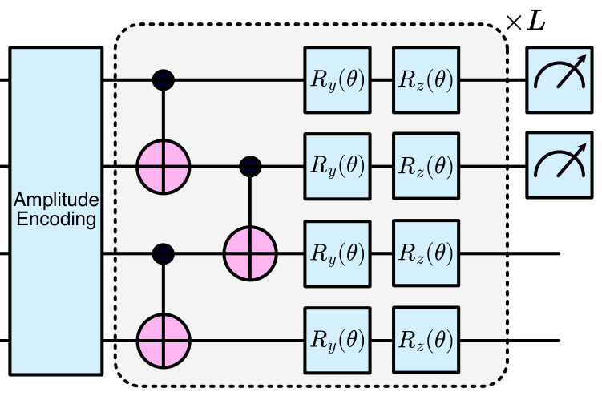
<figcaption class="paper-figure-caption"><b>Fig 1.</b> Figure 1: A L layer of the variational ansatz of our quantum classifier. All single qubit gates in this ansatz are rotation gates (Ry(θ) = exp  −iθ</figcaption>
</figure>
<figure class="paper-figure-card">
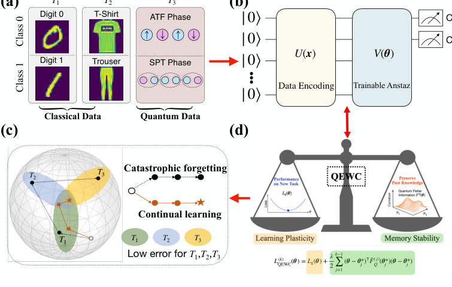
<figcaption class="paper-figure-caption"><b>Fig 2.</b> Figure 2: Overview of the proposed quantum elastic weight consolidation (QEWC) framework. (a) continual learning tasks considered in this work, including classical image- classification tasks and a quantum-state classification task involving ATF and SPT phases. (b) Variational quantum classifier used for sequential binary classification. Classical input data are embedded into the amplitudes of an n-qubit quantum state through amplitude encoding U(x), processed by a trainable ansatz V (θ), and mapped to class predictions through measurement readout. (c) Illustration of catastrophic forgetting and continual learning in the parameter/state manifold. Without knowledge consolidation, training on...</figcaption>
</figure>
<figure class="paper-figure-card">
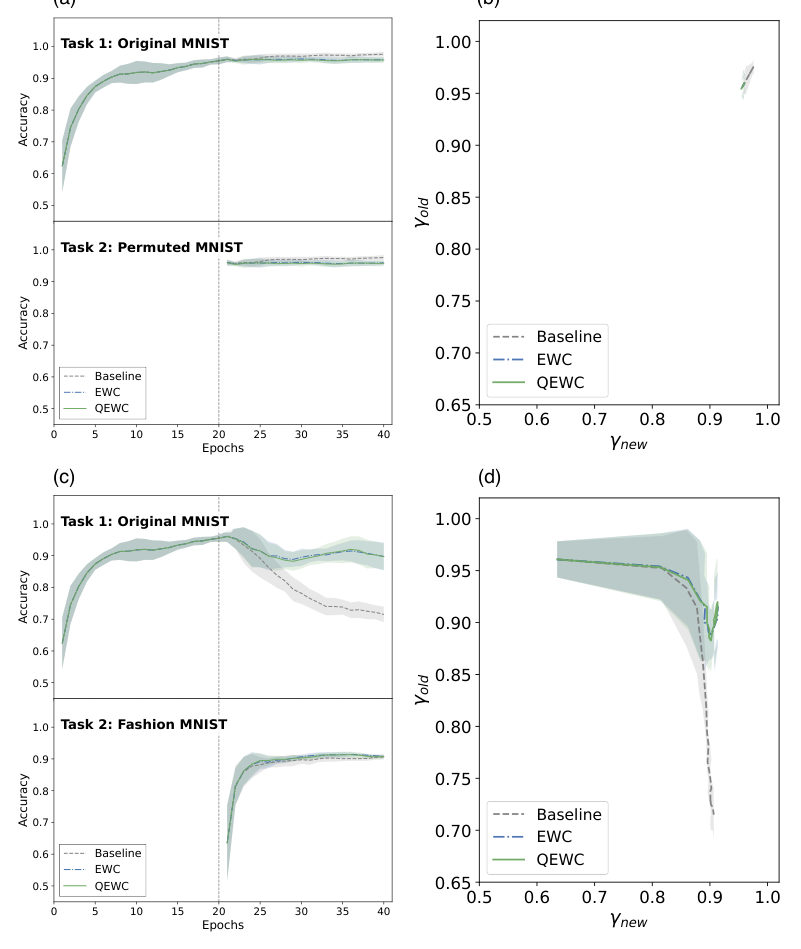
<figcaption class="paper-figure-caption"><b>Fig 3.</b> Figure 3: Performance benchmarking for the EWC and QEWC frameworks. (a) Learning curves of two similar tasks: classifying the original and pixel-permuted MNIST images. Gray lines plot the accuracies for the two tasks respectively trained without the EWC or QEWC framework, whereas blue and green lines show the corresponding results with using of EWC and QEWC frameworks respectively. (b) Forgetting curve for two tasks with large similarity. Here, γold (γnew) represents the accuracy of the quantum classifier on the old (new) task. (c) Learning curves of two dissimilar tasks: classifying the original MNIST hand-written images and fashion-MNIST clothing images. (d) Forgetting curve of two...</figcaption>
</figure>
<figure class="paper-figure-card">
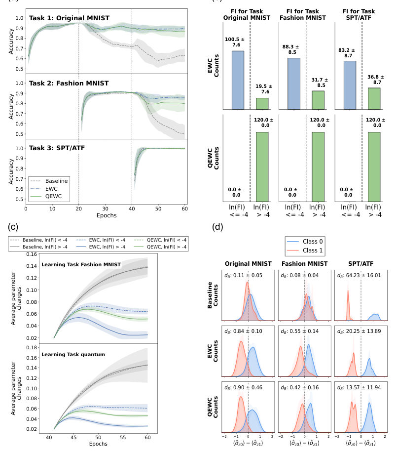
<figcaption class="paper-figure-caption"><b>Fig 4.</b> Figure 4: Experimental results for continually learning three tasks. (a) The prediction accuracy for three sequential tasks at each epoch during the continual learning process of the quantum classifier. (b) Distribution of Fisher information for all parameters after learning each task. (c) Average parameter change compared to the obtained parameters for previous tasks during the learning stage for the new task. The top (bottom) figure corresponds to the learning for T2 (T3) (d) Distribution of the measured expected values which determine the prediction label of input data. For each task, red and blue correspond to two classes of data samples, respectively. A greater separation between the...</figcaption>
</figure>
<figure class="paper-figure-card">
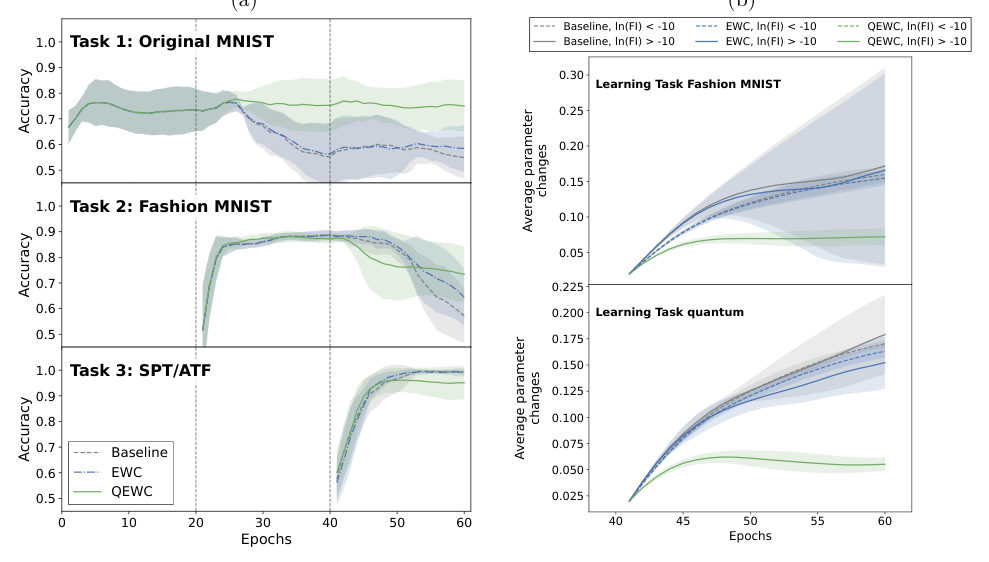
<figcaption class="paper-figure-caption"><b>Fig 5.</b> Figure 5: Continual-learning performance and parameter dynamics under noise for the three-task sequence. (a) Classification accuracy of the baseline, EWC, and QEWC frameworks at each epoch under depolarizing noise (p = 0.01), with dashed vertical line indicating task boundaries. (b) Mean absolute parameter displacement of the high-FI and low-FI groups relative to the previous task optimum during T2 and T3 training.</figcaption>
</figure>
</div>

<p><strong>Summary.</strong> This paper proposes Quantum Elastic Weight Consolidation (QEWC) to combat catastrophic forgetting in Variational Quantum Classifiers. It replaces classical Fisher Information with the measurement-independent Quantum Fisher Information (QFI) to quantify parameter importance geometrically. The results establish QEWC as a robust, physically motivated method for training quantum models on sequential tasks.</p>
<p><strong>Why it may be interesting.</strong> It directly addresses model robustness in quantum machine learning by grounding regularization in fundamental quantum geometric measures like QFI, which is crucial for understanding information flow in quantum computation.</p>
<details>
<summary>Detailed structure</summary>
<p><strong>Main problem.</strong> The core problem is mitigating catastrophic forgetting in quantum models trained sequentially on different tasks.</p>
<p><strong>Main result.</strong> Quantum Elastic Weight Consolidation (QEWC), which uses the Quantum Fisher Information (QFI), successfully mitigates forgetting and provides a physically motivated regularization framework superior to classical methods.</p>
<p><strong>Method.</strong> The authors adapt the EWC framework by replacing the classical Fisher Information with QFI, providing an information-geometric measure of parameter sensitivity for quantum states.</p>
<p><strong>Model / system.</strong> The study uses Variational Quantum Classifiers (VQCs) implemented via parameterized quantum circuits (PQCs) to perform sequential binary classification tasks.</p>
<p><strong>Key observables.</strong> Catastrophic forgetting, QFI matrix ($ar{F}^{(j)}_{Q}$), and the resulting task-specific loss function $\mathcal{L}_{	ext{EWC}}$.</p>
<p><strong>Important parameters / regimes.</strong> The regularization strength hyperparameter ($\lambda$) controls the stability-plasticity trade-off.</p>
<p><strong>Assumptions / limitations.</strong> A key assumption for tractability is the use of a diagonal approximation for the full QFI matrix, which neglects off-diagonal correlations.</p>
<p><strong>Figures summary.</strong> Not specified in detail, but comparisons are made between unregularized training, CFI-based EWC, and QFI-based QEWC across sequential tasks.</p>
<p><strong>Paper structure.</strong> The paper introduces the problem of quantum continual learning, derives the QEWC objective using QFI, compares it to classical methods (CFI), analyzes its performance under noise, and provides theoretical bounds on state stability.</p>
</details>
<details>
<summary>Abstract</summary>
<p>Quantum continual learning aims to train quantum models on sequential tasks without losing previously learned knowledge. However, variational quantum classifiers (VQCs) are prone to catastrophic forgetting under nonstationary task distributions. We propose quantum elastic weight consolidation (QEWC), a quantum Fisher information (QFI)-informed regularization method for mitigating forgetting. Unlike conventional elastic weight consolidation based on classical Fisher information (CFI), which measures parameter importance through measurement-dependent output statistics, QEWC uses QFI to quantify the intrinsic sensitivity of the parameterized quantum state. This gives an information-geometric view in which important parameters are identified by the local response of the quantum state manifold. We evaluate QEWC on VQCs trained on sequential binary classification tasks, including classical image-classification and quantum phase-classification tasks. Simulations show that sequential training without regularization causes severe forgetting, while both CFI-based EWC and QFI-based QEWC improve retention of previous tasks. Mechanistic analyses further show that the two methods impose different regularization geometries: CFI acts selectively on measurement-sensitive directions, whereas QFI imposes a denser state-geometric constraint over parameter space. Under depolarizing noise, CFI values are strongly suppressed by degraded measurement statistics, while QFI preserves a more stable sensitivity structure of the noisy parameterized quantum state. These results establish QEWC as a physically motivated approach for studying and mitigating forgetting in quantum continual learning through quantum-state geometry.</p>
</details>
<p><sub><a href="#top">↑ back to top</a></sub></p>

<p><a id="paper-2607.15358"></a></p>
<h3 id="spectral-amplification-for-ground-state-energy-estimation-of-electronic-structure-in-first-quantization"><a href="http://arxiv.org/abs/2607.15358v1">Spectral amplification for ground-state energy estimation of electronic structure in first quantization</a></h3>
<p><strong>Authors:</strong> Alicja Dutkiewicz, Alec F. White, Guang Hao Low, A. Eugene DePrince, Matthew P. Harrigan, Marika Kieferova, Ryan Babbush, Dominic W. Berry, Nicholas C. Rubin<br>
<strong>Type:</strong> theory · <strong>Category:</strong> quantum information and computing · <strong>PDF:</strong> <a href="https://arxiv.org/pdf/2607.15358v1">https://arxiv.org/pdf/2607.15358v1</a><br>
<strong>Analysis basis:</strong> full PDF text, analyzed in chunks
<strong>Topic relevance:</strong> <code>correlated cavity matter</code> <strong>1/5</strong></p>
<div class="figure-strip-hint">↔ Scroll figures horizontally</div>
<div class="paper-figures-scroll">
<figure class="paper-figure-card">

<figcaption class="paper-figure-caption"><b>Fig 1.</b> FIG. 1. Overall structure of the circuit for the block-encoding. For clarity we have grouped the registers as follows: “branch” indicates the qubits used to control the application of the T, V , and X branches, “outer” indicates those qubits involved only in the outer state preparation (nested boxes and the w register), “mix” indicates the shared index register and nuclear flag which are part of the outer or inner prepare depending on which term is being applied, “inner” indices qubits involved only in the inner state preparation (the r register and the b flag), “overflow” indicates overflow bits, and |Ψ⟩is the system register. We use a small square to indicate some kind of generalized...</figcaption>
</figure>
<figure class="paper-figure-card">

<figcaption class="paper-figure-caption"><b>Fig 2.</b> FIG. 2. ΛT and Λpotential for LCU method from [16] vs SOSSA (effective scaling after gap amplification). The lower slopes for SOSSA recover the expected scaling from Eq. (58).</figcaption>
</figure>
<figure class="paper-figure-card">

<figcaption class="paper-figure-caption"><b>Fig 3.</b> FIG. 3. The top five subroutines and summed remainder costs for the Hydrogen system in Table V. The 1/∥ν∥preparation cost is three times the base nested-boxes cost because we use amplitude amplification for the state preparation for this system. The V-phase accumulation is the efficient Add-and-phase circuit with O(n2 p) described in Appendix B 4 b.</figcaption>
</figure>
<figure class="paper-figure-card">

<figcaption class="paper-figure-caption"><b>Fig 4.</b> FIG. 4. βnuc for randomly distributed ions of charge ζ = 1, 2, 4 at fixed total density and fixed kinetic energy cutoff. βnuc appears to be asymptotically linear both when plotted directly (left) and when normalized by the number of ions (right). Each point is computed from an average of 100 randomly initialized configurations.</figcaption>
</figure>
<figure class="paper-figure-card">

<figcaption class="paper-figure-caption"><b>Fig 5.</b> FIG. 5. Structure of the mixed outer/inner prepare Pout/in. The labels on the right-hand-side are for comparison with Fig. 1.</figcaption>
</figure>
</div>

<p><strong>Summary.</strong> This paper presents an advanced quantum computational technique to estimate ground-state energies for electronic structure problems. It improves upon existing methods by utilizing Sum-of-Squares Spectral Amplification on a first-quantized Hamiltonian representation. The resulting protocol offers substantial, provable reductions in the required quantum resources for simulating materials and chemical systems.</p>
<p><strong>Why it may be interesting.</strong> This work directly addresses quantum algorithm efficiency by providing a provable, significant speedup in simulating fundamental physical systems (chemistry/materials) using first-quantized representations.</p>
<details>
<summary>Detailed structure</summary>
<p><strong>Main problem.</strong> The primary goal is to improve the asymptotic gate complexity for estimating the ground-state energy of electronic structure Hamiltonians using quantum algorithms.</p>
<p><strong>Main result.</strong> By employing a Sum-of-Squares Spectral Amplification (SOSSA) protocol based on the total charge density operator, the authors achieve an asymptotic reduction in resource estimates for ab initio simulations by a factor up to $44	imes$.</p>
<p><strong>Method.</strong> The core method involves reformulating the first-quantized Hamiltonian into a Sum-of-Squares form and applying spectral gap amplification techniques within Quantum Phase Estimation (QPE).</p>
<p><strong>Model / system.</strong> The system is the electronic structure of chemical or material systems, modeled using a non-relativistic Hamiltonian ($H = T + V + U$) represented in a plane wave basis.</p>
<p><strong>Key observables.</strong> Gate complexity, Block Encoding Normalization ($\lambda$), and the effective 1-norm ($\lambda_{eff}$), which dictate resource requirements.</p>
<p><strong>Important parameters / regimes.</strong> Number of electrons ($\eta$), simulation grid spacing ($\Delta$), and the gap energy ($E_{gap}$).</p>
<p><strong>Assumptions / limitations.</strong> The Born-Oppenheimer approximation is used, and the analysis relies on deriving an analytical SOS representation using the total charge density operator.</p>
<p><strong>Figures summary.</strong> Not specified by notes; the focus is on mathematical scaling improvements ($\lambda$ comparisons) rather than visual figure descriptions.</p>
<p><strong>Paper structure.</strong> The paper develops the theoretical framework for applying SOSSA to first-quantized Hamiltonians, deriving improved scaling laws for block encoding costs compared to prior LCU methods, and quantifying the resulting resource reduction factor.</p>
</details>
<details>
<summary>Abstract</summary>
<p>We demonstrate an asymptotic gate complexity improvement in first-quantized ground-state energy estimation of electronic structure Hamiltonians in a plane wave basis by employing the sum-of-squares spectral gap amplification protocol. The improvement relies on identifying a sum-of-squares representation of the Hamiltonian which provides a lower bound certificate and low cost block encoding that leads to a provably lower quantum phase estimation gate cost. This is achieved by using a sum-of-squares operator generated by the total charge density operator resulting in a block encoding normalization improvement of $λ= \mathcal{O}\left(ηΔ^{-1.5}+η^{1.5}Δ^{-1} \right)$ compared to prior work $λ= \mathcal{O}(ηΔ^{-2}+η^2Δ^{-1})$ where $η$ is the number of electrons and $Δ$ is the simulation grid spacing. The asymptotic reduction in block encoding normalization and similar block encoding costs to prior work is demonstrated to reduce resource estimates for materials and chemical systems by a factor of $2 - 44\times$ corresponding to the lowest cost estimates for ab initio materials simulation.</p>
</details>
<p><sub><a href="#top">↑ back to top</a></sub></p>
<h2 id="other-papers-7">Other papers (7)</h2>
<p><em>Papers from primary archives without highlighted authors or any topic match. Click to expand.</em></p>
<details>
<summary>Show other papers</summary>

<p><a id="paper-2607.15906"></a></p>
<h3 id="alleviating-the-sparse-matrix-scaling-bottleneck-in-adaptive-vqe-via-greedy-operator-commutativity-partitioning-and-high-order-taylor-state-evolution"><a href="http://arxiv.org/abs/2607.15906v1">Alleviating the Sparse Matrix Scaling Bottleneck in Adaptive VQE via Greedy Operator Commutativity Partitioning and High-Order Taylor State Evolution</a></h3>
<p><strong>Authors:</strong> Hermawan Kresno Dipojono<br>
<strong>Type:</strong> theory · <strong>Category:</strong> strongly correlated electrons · <strong>PDF:</strong> <a href="https://arxiv.org/pdf/2607.15906v1">https://arxiv.org/pdf/2607.15906v1</a><br>
<strong>Analysis basis:</strong> full PDF text, analyzed in chunks</p>
<div class="figure-strip-hint">↔ Scroll figures horizontally</div>
<div class="paper-figures-scroll">
<figure class="paper-figure-card">

<figcaption class="paper-figure-caption"><b>Fig 1.</b> Figure 1. Benchmark performance of the GOCP-optimized pipeline. (A) Convergence profile of GOCP-optimized ADAPT-VQE for stretched H2O. (B) Landscape sensitivity analysis showing gradient stagnation under the Bravyi-Kitaev mapping, indicating a decoupling of the operator family from the energy gradient.</figcaption>
</figure>
</div>
<p><strong>Summary.</strong> This paper introduces a novel framework combining Greedy Operator Commutativity Partitioning (GOCP) with high-order Taylor series expansion to overcome the exponential scaling bottleneck in simulating quantum circuit evolution for molecular electronic structure calculations. By replacing dense matrix exponentiation with sparse operations, it enables accurate ground-state energy determination for large, strongly correlated systems previously deemed intractable.</p>
<p><strong>Why it may be interesting.</strong> This work provides a crucial algorithmic breakthrough for quantum chemistry simulations, directly addressing the memory and computational scaling limits that restrict the size of systems solvable by current VQE implementations.</p>
<details>
<summary>Detailed structure</summary>
<p><strong>Main problem.</strong> The primary challenge is overcoming the exponential computational bottleneck encountered when simulating the growth of adaptive quantum circuits (ansatz evolution) in VQE variants for strongly correlated systems.</p>
<p><strong>Main result.</strong> The proposed framework maintains high numerical fidelity while achieving sub-chemical accuracy in ground-state energy calculations, enabling simulations on operator manifolds exceeding $2.68 	imes 10^8$ elements efficiently.</p>
<p><strong>Method.</strong> It combines Greedy Operator Commutativity Partitioning (GOCP) to manage the operator space with a deterministic fifth-order Taylor series expansion ($\mathcal{O}(5)$) to approximate unitary evolution using sparse matrix-vector operations instead of explicit matrix exponentiation.</p>
<p><strong>Model / system.</strong> The study applies these methods to molecular electronic structures, benchmarking on systems like BeH2 and H2O. The underlying physics involves mapping fermionic Hamiltonians ($    ext{H}<em ext_qubit="ext{qubit">{    ext{ferm}}$) onto qubit Pauli strings ($   ext{H}</em>$) using JW or BK mappings.}</p>
<p><strong>Key observables.</strong> Ground-state energy expectation value ($E_0$), state fidelity (maintained $> 1 - 10^{-6}$), and the ability to handle large operator manifolds.</p>
<p><strong>Important parameters / regimes.</strong> The framework is tested across varying qubit numbers (up to 14 qubits) and molecular geometries, demonstrating scalability with high-dimensional operator spaces.</p>
<p><strong>Assumptions / limitations.</strong> The core assumption is that the $\mathcal{O}(5)$ Taylor expansion provides sufficient accuracy for achieving chemical precision in the state evolution approximation.</p>
<p><strong>Figures summary.</strong> Figure 1 shows convergence profiles for stretched H2O and gradient stagnation under BK mapping. Table II compares scaling metrics (Hilbert Space Dimension vs. Operator Pool size) for JW/BK mappings across H2O and BeH2. Table III summarizes benchmark energy convergence for multiple systems.</p>
<p><strong>Paper structure.</strong> The paper introduces GOCP to partition the operator pool, followed by the $\mathcal{O}(5)$ Taylor expansion technique to simulate evolution via sparse SpMV operations. Performance is then evaluated across various molecular benchmarks (BeH2, H2O) using both JW and BK mappings.</p>
</details>
<details>
<summary>Abstract</summary>
<p>The Variational Quantum Eigensolver (VQE) and its adaptive variants, such as ADAPT-VQE, are central to the study of strongly correlated quantum systems. However, the classical simulation of the ansatz growth process remains constrained by the exponential scaling of operator space and the associated computational cost of unitary evolution. We introduce the Greedy Operator Commutativity Partitioning (GOCP) framework, an analytical methodology designed to optimize both operator selection and state evolution. By reformulating complex unitary rotations as a chained sequence of fifth-order O(5) Taylor series expansions, GOCP bypasses the need for explicit matrix exponentiation, reducing the computational task to a sequence of sparse matrix-vector operations. We evaluate the performance of this framework across diverse molecular systems, including BeH2 and strongly correlated H2O geometries, utilizing both Jordan-Wigner and Bravyi-Kitaev mappings. Our results demonstrate that the GOCP framework maintains exceptional numerical fidelity-exceeding 1 - 10^-6 in state fidelity-while achieving sub-chemical accuracy in ground-state energy calculations. By enabling the simulation of operator manifolds exceeding 2.68 x 10^8 elements with high efficiency, this approach provides a scalable and rigorous pathway for exploring deep variational circuits in complex quantum many-body systems.</p>
</details>
<p><sub><a href="#top">↑ back to top</a></sub></p>

<p><a id="paper-2607.15543"></a></p>
<h3 id="benchmarking-hybrid-quantum-classical-algorithms-for-power-grid-optimization-problems"><a href="http://arxiv.org/abs/2607.15543v1">Benchmarking Hybrid Quantum-Classical Algorithms for Power Grid Optimization Problems</a></h3>
<p><strong>Authors:</strong> Igor Gaidai, Rick Mukherjee<br>
<strong>Type:</strong> theory · <strong>Category:</strong> quantum information and computing · <strong>PDF:</strong> <a href="https://arxiv.org/pdf/2607.15543v1">https://arxiv.org/pdf/2607.15543v1</a><br>
<strong>Analysis basis:</strong> full PDF text, analyzed in chunks</p>
<div class="figure-strip-hint">↔ Scroll figures horizontally</div>
<div class="paper-figures-scroll">
<figure class="paper-figure-card">

<figcaption class="paper-figure-caption"><b>Fig 1.</b> Figure 1. A section of an input graph. The nodes represent buses and have associated voltage phasors (V ), cumulative loads (L), and connected generators (g). The edges represent electrical lines and have associated admittances (y).</figcaption>
</figure>
<figure class="paper-figure-card">

<figcaption class="paper-figure-caption"><b>Fig 2.</b> Figure 2. Schematic representation of the workflow of the algorithm described in Section III D. Bitstrings (¯u1, ..., ¯uM) are measured from the quantum circuit. Their costs are eval- uated classically by optimizing continuous degrees of freedom. Then an average target metric ¯F(C) is passed to the outer op- timization layer over variational angles. The new variational angles proposed by the optimizer are applied to the quantum circuit. See the text for more details.</figcaption>
</figure>
<figure class="paper-figure-card">

<figcaption class="paper-figure-caption"><b>Fig 3.</b> Figure 3. Mean and maximum number of shots necessary to converge mean sample AR to within 0.05 of its expected value with probability 90%. The mean and maximum is taken over different random variational angles and random instances at a given system size N = |G|.</figcaption>
</figure>
<figure class="paper-figure-card">

<figcaption class="paper-figure-caption"><b>Fig 4.</b> Figure 4. Schematic representation of the AC-OPF-UC solvers considered in this work. Binary and continuous vari- ables for SCIP are optimized together with a single mixed integer optimizer. For other solvers they are optimized sepa- rately with 2 different optimizers indicated at the bottom.</figcaption>
</figure>
<figure class="paper-figure-card">

<figcaption class="paper-figure-caption"><b>Fig 5.</b> Figure 6. Instance-averaged approximation ratio of the best incumbent solution vs time for the 13 generators dataset.</figcaption>
</figure>
</div>
<p><strong>Summary.</strong> This work evaluates the potential of hybrid quantum-classical algorithms, specifically QAOA variants, to solve the challenging AC Optimal Power Flow Unit Commitment problem. The authors tested qubit-efficient encoding methods on small grids but found no performance improvement over classical random sampling. They conclude that demonstrating a true quantum advantage requires scaling up to much larger, currently intractable system sizes.</p>
<p><strong>Why it may be interesting.</strong> It directly applies quantum optimization techniques (QAOA) to a major, highly constrained engineering optimization problem, providing a concrete test case for near-term quantum hardware feasibility in applied physics/engineering.</p>
<details>
<summary>Detailed structure</summary>
<p><strong>Main problem.</strong> The paper benchmarks hybrid quantum-classical variational algorithms for solving the complex Alternating Current Optimal Power Flow Unit Commitment (AC-OPF-UC) problem.</p>
<p><strong>Main result.</strong> The qubit-efficient hybrid method did not outperform uniform random sampling on small instances, suggesting that much larger system sizes are needed to demonstrate a potential quantum advantage over classical solvers.</p>
<p><strong>Method.</strong> Two hybrid approaches were investigated: applying QAOA directly to a discretized formulation (requiring too many qubits) and a qubit-efficient approach encoding only binary variables while classically optimizing continuous power flow variables.</p>
<p><strong>Model / system.</strong> The system is an electrical power grid modeled by the AC-OPF-UC problem, which involves minimizing cost subject to nonconvex AC power-flow constraints and discrete generator commitment decisions. The optimization is formulated using penalty terms within a Hamiltonian for VQA/QAOA.</p>
<p><strong>Key observables.</strong> Active power (P), reactive power (Q), node voltages, phase angles, and the total system cost function.</p>
<p><strong>Important parameters / regimes.</strong> System size (number of generators, 5 to 13 tested); required qubit count for full discretization ($\gg$ current capacity).</p>
<p><strong>Assumptions / limitations.</strong> The primary assumption is that a quantum advantage might exist, but the authors note this requires testing systems much larger than their computational capacity allows.</p>
<p><strong>Paper structure.</strong> The paper introduces AC-OPF-UC as a difficult MINLP problem. It details two candidate hybrid algorithms (direct QAOA vs. qubit-efficient encoding). The core is the benchmarking process comparing these methods against established classical solvers like SCIP and uniform sampling.</p>
</details>
<details>
<summary>Abstract</summary>
<p>Alternating Current Optimal Power Flow Unit Commitment (AC-OPF-UC) is a difficult mixed-integer nonlinear optimization problem that combines binary generator commitment decisions with nonconvex continuous AC power-flow constraints. In this work, we investigate whether hybrid quantum-classical variational algorithms can improve the solution of single-period AC-OPF-UC relative to classical approaches. To the best of our knowledge, this is the first study to directly evaluate quantum or hybrid quantum-classical algorithms for the full AC-OPF-UC problem. We consider two candidate algorithms for improving AC-OPF-UC solution quality relative to purely classical methods on ideal quantum hardware. The first applies QAOA directly to a fully discretized formulation of the problem, with equality and inequality constraints incorporated through penalty terms and slack variables. Although conceptually straightforward, this approach requires a prohibitively large number of qubits even for small instances. The second, qubit-efficient approach encodes only the binary generator status variables on a quantum computer, while optimizing the continuous power-flow variables classically for each sampled bitstring. We benchmark this method on randomly generated AC-OPF-UC instances with 5 to 13 generators and compare it against SCIP, SMAC, and uniform random sampling. Our simulations show that the qubit-efficient hybrid method does not outperform uniform sampling. These results suggest that in order to establish potential advantage of the variational hybrid strategy considered here over the best classical algorithms, if any, much larger system sizes (25+ generators) need to be tested, which is beyond our computational capacity. Alternatively, different approaches, such as quantum versions of branch-and-bound methods, may be more promising.</p>
</details>
<p><sub><a href="#top">↑ back to top</a></sub></p>

<p><a id="paper-2607.15926"></a></p>
<h3 id="causality-in-pure-quantum-computation-with-quantum-control"><a href="http://arxiv.org/abs/2607.15926v1">Causality in Pure Quantum Computation with Quantum Control</a></h3>
<p><strong>Authors:</strong> Kengo Hirata, Takeshi Tsukada<br>
<strong>Type:</strong> theory · <strong>Category:</strong> quantum information and computing · <strong>PDF:</strong> <a href="https://arxiv.org/pdf/2607.15926v1">https://arxiv.org/pdf/2607.15926v1</a><br>
<strong>Analysis basis:</strong> full PDF text, analyzed in chunks</p>
<div class="figure-strip-hint">↔ Scroll figures horizontally</div>
<div class="paper-figures-scroll">
<figure class="paper-figure-card">

<figcaption class="paper-figure-caption"><b>Fig 1.</b> Figure 1 Causality violation in naive higher-order quantum control in (∗∗). (Left) The function f acts as a NOT gate controlled by the qubit x. Each fin and fout represents the input and output of f. (Right) Applying f to the control qubit itself creates a closed loop.</figcaption>
</figure>
</div>
<p><strong>Summary.</strong> This work develops a sophisticated type system for higher-order quantum computation that explicitly incorporates physical causality constraints. By extending linear logic with causal connectives, the authors prove that certain programs leading to unphysical operations are rejected by the type checker. This advances the formal understanding of what constitutes a physically realizable quantum computation.</p>
<p><strong>Why it may be interesting.</strong> It provides rigorous mathematical tools for determining which abstract quantum computational models are physically implementable, which is crucial for designing fault-tolerant or causality-respecting quantum hardware protocols.</p>
<details>
<summary>Detailed structure</summary>
<p><strong>Main problem.</strong> The paper investigates causality issues that arise when combining quantum control mechanisms (like conditional branching) with higher-order functions in pure quantum computation.</p>
<p><strong>Main result.</strong> It proposes a novel typed lambda calculus equipped with an intuitionistic BV logic type system, proving that this structure can successfully restrict the language to only define physically realizable supermaps.</p>
<p><strong>Method.</strong> The authors use proof theory and categorical semantics, developing a specialized type system ($\lambda qif$) grounded in causal linear logic to enforce physical causality constraints on quantum operations.</p>
<p><strong>Model / system.</strong> The model is pure quantum computation formalized using supermaps (transformations acting on quantum channels) and extended with higher-order functions and quantum conditional branching ($ ext{qif}$).</p>
<p><strong>Key observables.</strong> Causality violation, physical realizability of supermaps, the structure of resulting linear maps when causality fails.</p>
<p><strong>Important parameters / regimes.</strong> The type system relies on extensions of Multiplicative Linear Logic (MLL) and intuitionistic BV logic.</p>
<p><strong>Assumptions / limitations.</strong> The analysis assumes that physically unrealizable processes correspond to violations of causal constraints enforced by the proposed type system.</p>
<p><strong>Figures summary.</strong> Figures illustrate causality violation in naive higher-order control, basic inference rules for the logical framework ($   ext{sequentIBV}$), and programs mapping to proofs.</p>
<p><strong>Paper structure.</strong> The paper builds from identifying the problem (causality failure with $    ext{qif}$) to proposing a solution via a type system based on causal logic, culminating in formal proofs within categorical semantics.</p>
</details>
<details>
<summary>Abstract</summary>
<p>Indefinite causal order is a characteristic phenomenon in quantum computation, with examples including the quantum SWITCH and the OCB process. Not all such processes are believed to be physically realizable: while some implementations of the quantum SWITCH have been proposed, the OCB process is suspected to be unrealizable. This difference in realizability is commonly attributed to constraints imposed by physical causality.   This paper studies such a causality issue in a higher-order setting, proposing a typed lambda calculus with quantum control and its categorical semantics. Our calculus extends pure quantum computation with higher-order functions and quantum conditional branching, and it is equipped with a type system based on intuitionistic BV logic to enforce causality. We also present a novel model that is closely related to the Caus construction, by which we prove that some physically-unrealizable processes are not definable in our language.</p>
</details>
<p><sub><a href="#top">↑ back to top</a></sub></p>

<p><a id="paper-2607.15433"></a></p>
<h3 id="from-hyperplanes-to-hyperellipsoids-characterizing-the-inherent-interpretability-of-linear-and-single-qubit-mixed-state-binary-classification-models"><a href="http://arxiv.org/abs/2607.15433v1">From hyperplanes to hyperellipsoids: characterizing the inherent interpretability of linear and single-qubit mixed-state binary classification models</a></h3>
<p><strong>Authors:</strong> Kaitlin Gili<br>
<strong>Type:</strong> theory · <strong>Category:</strong> disordered systems and neural networks · <strong>PDF:</strong> <a href="https://arxiv.org/pdf/2607.15433v1">https://arxiv.org/pdf/2607.15433v1</a><br>
<strong>Analysis basis:</strong> full PDF text, analyzed in chunks</p>
<div class="figure-strip-hint">↔ Scroll figures horizontally</div>
<div class="paper-figures-scroll">
<figure class="paper-figure-card">

<figcaption class="paper-figure-caption"><b>Fig 1.</b> Figure 1: Toy classification example for two data features. (a) The model can only learn the slope of a line to separate the data. (b) The model can only learn the semi-axis lengths of an ellipsoid to separate the data.</figcaption>
</figure>
</div>
<p><strong>Summary.</strong> This paper compares the geometric and interpretability differences between standard linear classifiers and a quantum model based on single-qubit mixed states for binary classification. It shows that the quantum model restricts the decision boundary to an ellipsoid rather than a simple hyperplane. This offers an accessible pedagogical bridge for introducing quantum machine learning concepts using familiar classical ML tools.</p>
<p><strong>Why it may be interesting.</strong> It provides a concrete, low-dimensional analogy showing how physical constraints (like those imposed by single-qubit measurements) translate into specific structural limitations (ellipsoidal boundaries) on machine learning models, which is relevant to understanding model capacity in quantum information processing.</p>
<details>
<summary>Detailed structure</summary>
<p><strong>Main problem.</strong> The paper characterizes and compares the inherent interpretability of standard linear models versus single-qubit mixed-state models for supervised binary classification.</p>
<p><strong>Main result.</strong> A single-qubit mixed state model results in a decision boundary shaped like a hyperellipsoid, which is mathematically an 'ellipsoid version' of the linear hyperplane boundary.</p>
<p><strong>Method.</strong> The comparison uses standard supervised binary classification setups, analyzing the geometric constraints and feature importance derived from both the linear weight vector and the probabilistic semi-axes of the ellipsoid.</p>
<p><strong>Model / system.</strong> The models are a standard linear classifier ($f_w(\mathbf{x})$) and a single qubit mixed state model ($   ext{Tr}[
ho_{    ext{mixed}} O]$). The latter constrains the decision boundary to an hyperellipsoid $\sum x_d^2 / a_d^2 = 1$.</p>
<p><strong>Key observables.</strong> Feature importance (derived from weights $|w_d|$ vs. probabilities $p_d$), and the shape of the decision boundary (hyperplane vs. hyperellipsoid).</p>
<p><strong>Important parameters / regimes.</strong> The relative feature importances, represented by the probabilities $p_d$, which determine the semi-axis lengths $a_d$.</p>
<p><strong>Assumptions / limitations.</strong> The analysis is kept accessible to readers with no quantum background and assumes a standard supervised binary classification setup.</p>
<p><strong>Figures summary.</strong> Figure 1 illustrates the difference between the two models using toy data, showing the linear model learning a line and the single-qubit mixed state model learning an ellipsoid in a low-dimensional setting.</p>
<p><strong>Paper structure.</strong> The paper introduces both models, mathematically derives the hyperellipsoidal form for the quantum case, compares their geometric inductive biases (hyperplane vs. hyperellipsoid), analyzes feature importance differences, and concludes with pedagogical suggestions for teaching Quantum ML.</p>
</details>
<details>
<summary>Abstract</summary>
<p>We characterize and compare the inherent interpretability offerings of a standard linear model with a single qubit mixed state model for the task of supervised binary classification. A side by side comparison reveals that a single qubit mixed state model for binary classification is just the ``ellipsoid version" of standard linear model classification. More precisely, rather than learning a hyperplane to classify data, we learn a hyperellipsoid. We discuss the consequences of the geometric inductive biases of both models, as well as how each model contains a different feature importance inductive bias. This short characterization offers an accessible route to quantum machine learning (ML) ideas for readers who have zero background in quantum and are only familiar with linear classification in ML. In support of ML pedagogy, we encourage instructors to utilize this piece to smoothly introduce quantum ML ideas into the undergraduate ML classroom.</p>
</details>
<p><sub><a href="#top">↑ back to top</a></sub></p>

<p><a id="paper-2607.16114"></a></p>
<h3 id="parameterized-quantum-circuit-semantics-through-enriched-categories"><a href="http://arxiv.org/abs/2607.16114v1">Parameterized Quantum Circuit Semantics Through Enriched Categories</a></h3>
<p><strong>Authors:</strong> Neil J. Ross, Scott Wesley<br>
<strong>Type:</strong> theory · <strong>Category:</strong> quantum information and computing · <strong>PDF:</strong> <a href="https://arxiv.org/pdf/2607.16114v1">https://arxiv.org/pdf/2607.16114v1</a><br>
<strong>Analysis basis:</strong> full PDF text, analyzed in chunks</p>
<div class="figure-strip-hint">↔ Scroll figures horizontally</div>
<div class="paper-figures-scroll">
<figure class="paper-figure-card">

<figcaption class="paper-figure-caption"><b>Fig 1.</b> Figure 4. Network topologies obtained from the pair-of-pants comonoids.</figcaption>
</figure>
<figure class="paper-figure-card">

<figcaption class="paper-figure-caption"><b>Fig 2.</b> Figure 5. Circuit equations satisfied by ΞM. Relations (1) through to (3) correspond to the properties in Thm. 6.6, whereas relation (4) is Thm. 6.7.</figcaption>
</figure>
</div>
<p><strong>Summary.</strong> This paper develops an advanced semantic framework using enriched category theory to model parameterized quantum circuits beyond what standard monoidal categories can handle. By enriching the circuit semantics over a parameter category, it successfully incorporates continuous or weighted dependencies inherent in modern quantum machine learning models. This provides a powerful mathematical tool for analyzing complex quantum control structures.</p>
<p><strong>Why it may be interesting.</strong> This work provides a highly abstract mathematical language (enriched categories) to rigorously analyze the structure of parameterized quantum circuits, which is crucial for understanding variational algorithms and QML models where parameter dependence is key.</p>
<details>
<summary>Detailed structure</summary>
<p><strong>Main problem.</strong> The paper addresses the need for a semantic model capable of representing parameterized families of quantum circuits, which standard monoidal category approaches fail to capture.</p>
<p><strong>Main result.</strong> It introduces an enriched category theory framework that successfully models parameterized circuit semantics, providing insights into controlled operations and unifying different perspectives on quantum control.</p>
<p><strong>Method.</strong> The approach uses enriched category theory, enriching the semantic domain over a parameter category V to encode the necessary structure for continuous or parameterized composition rules.</p>
<p><strong>Model / system.</strong> The model concerns general quantum circuits, particularly those arising in variational quantum algorithms and Quantum Machine Learning (QML) that involve free parameters (e.g., Pauli-Z rotations $RZ_{p_1} \otimes RZ_{p_2}$).</p>
<p><strong>Key observables.</strong> Circuit transformations, controlled operations, and the structure of parameterized unitaries.</p>
<p><strong>Important parameters / regimes.</strong> The continuous or discrete nature of the parameters (weights) governing the circuit gates.</p>
<p><strong>Assumptions / limitations.</strong> It assumes that standard models fail due to insufficient handling of parameter dependence, necessitating enrichment over a suitable base category V.</p>
<p><strong>Figures summary.</strong> Figure 1 illustrates the structure of a Frobenius algebra with its components; Figure 2 shows an example of a two-layer real amplitude ansatz circuit parameterized by weights.</p>
<p><strong>Paper structure.</strong> The paper builds from standard monoidal categories to address parameterization limitations, introducing enriched category theory. It studies special cases like Cartesian and monoidal closed parameters, culminating in showing how this framework unifies quantum control perspectives via dagger structures and control functors.</p>
</details>
<details>
<summary>Abstract</summary>
<p>It is well-known that combinatorial circuits are modeled mathematically by string diagrams in monoidal categories. Given a gate set $Σ$, the circuits over $Σ$ can be thought of as string diagrams in the free monoidal category generated by $Σ$. In this model, circuit semantics are then given by monoidal functors out of this free category. For quantum circuits, this functor is often valued in the category of unitary matrices. This model suffices for concrete quantum circuits, but fails to describe parameterized families of quantum circuits, such as those which arise in the analysis of ansatz circuits. In this paper, we introduce an approach to parameterized circuit semantics, which is based on enriched category theory. We first introduce an abstract categorical construction, and use this to gain new insights on controlled operations and quantum communication. We then study the special cases of Cartesian monoidal parameters and monoidal closed parameters, both endowing the parameterized semantics with useful constructions.We conclude by showing that the monoidal closed case can be used to unify two perspectives on quantum control.</p>
</details>
<p><sub><a href="#top">↑ back to top</a></sub></p>

<p><a id="paper-2607.15426"></a></p>
<h3 id="performance-model-for-hybrid-quantum-classical-workflows"><a href="http://arxiv.org/abs/2607.15426v1">Performance Model for Hybrid Quantum-Classical Workflows</a></h3>
<p><strong>Authors:</strong> Pooja Rao, Dimitar Trenev, Jerome Gonthier, Taylor Patti, Sebastian Stern, Tyler Takeshita, Yuri Alexeev, Cedric Lin, Sam McArdle, Justin Lietz, Katherine Klymko, Ermal Rrapaj, Norm Tubman, Krysta Svore, Peter Komar, Elica Kyoseva<br>
<strong>Type:</strong> theory · <strong>Category:</strong> quantum information and computing · <strong>PDF:</strong> <a href="https://arxiv.org/pdf/2607.15426v1">https://arxiv.org/pdf/2607.15426v1</a><br>
<strong>Analysis basis:</strong> full PDF text, analyzed in chunks</p>
<div class="figure-strip-hint">↔ Scroll figures horizontally</div>
<div class="paper-figures-scroll">
<figure class="paper-figure-card">

<figcaption class="paper-figure-caption"><b>Fig 1.</b> Fig. 1 The compute cycle: a complete round trip of information between the classical host and quantum accelerator. The total cycle time Tcycle = TC + TQ + Tcomm decomposes into classical compute time (TC), quantum compute time (TQ), and communication overhead (Tcomm). At the real-time level, classical processing and communication must satisfy TC,step + Tcomm,step ≤τ phys to preserve correctness.</figcaption>
</figure>
<figure class="paper-figure-card">

<figcaption class="paper-figure-caption"><b>Fig 2.</b> Fig. 2 Compute cycle for Sample-Based Quantum Diag- onalization (SQD). The standard workflow (solid lines) performs a single quantum sampling phase followed by classical subspace construction and diagonalization. The closed-loop variant (dashed lines) iteratively refines the cir- cuit ansatz based on diagonalization results. In both cases, the communication frequency is F = 1 per iteration, yield- ing a low communication-to-computation ratio (Rcc ≪1).</figcaption>
</figure>
<figure class="paper-figure-card">

<figcaption class="paper-figure-caption"><b>Fig 3.</b> Fig. 3 Compute cycle for the Generative Quantum Eigen- solver (GQE), assuming training from scratch. The trans- former samples operator index sequences that define quan- tum circuits, whose measured energies provide the training signal. The classical cost is dominated by the backprop- agation step (logit-matching loss), while the transformer forward pass (sampling) is computationally trivial. As with SQD, the workflow is quantum-dominated due to the large shot budget required for energy estimation.</figcaption>
</figure>
</div>
<p><strong>Summary.</strong> This paper introduces a comprehensive runtime model to analyze hybrid quantum-classical workflows, separating performance concerns into abstract application levels and strict real-time physical constraints. It demonstrates that while communication overhead can be quantified by a ratio, achieving fault tolerance requires careful consideration of timing feasibility dictated by the underlying hardware coherence times.</p>
<p><strong>Why it may be interesting.</strong> It provides essential architectural guidelines by quantifying when hardware co-location benefits are negligible versus when tight integration is mandatory for feasibility, which guides the roadmap for quantum hardware development.</p>
<details>
<summary>Detailed structure</summary>
<p><strong>Main problem.</strong> The field lacks a shared framework for analyzing performance when integrating quantum processors with classical High-Performance Computing (HPC) resources in hybrid workflows.</p>
<p><strong>Main result.</strong> A runtime model decomposes workflow execution into quantum, classical, and communication costs, allowing quantification of whether the bottleneck is computation or communication at different operational regimes.</p>
<p><strong>Method.</strong> The authors introduce a comprehensive runtime model that analyzes performance at both an abstract application level (using communication-to-computation ratios) and a physical real-time level (using feasibility constraints).</p>
<p><strong>Model / system.</strong> The system analyzed is the hybrid quantum-classical workflow, decomposed into $ ext{T}<em ext_C="ext{C">{    ext{cycle}} =   ext{T}</em>}} +   ext{T<em ext_comm="ext{comm">{    ext{Q}} +   ext{T}</em>$. The analysis distinguishes between application-level timing (logical qubits) and real-time constraints (physical coherence times).}</p>
<p><strong>Key observables.</strong> Communication-to-computation ratio ($  ext{R}_{    ext{cc}}$), Real-time feasibility constraint, Logical error probability ($P_L(r)$)</p>
<p><strong>Important parameters / regimes.</strong> Classical/Quantum Costs ($  ext{CC},    ext{CQ}$), Communication Latency ($L$), Bandwidth ($B$), Physical coherence time ($  au_{    ext{phys}}$), Code distance ($d$)</p>
<p><strong>Assumptions / limitations.</strong> The model assumes distinct levels of analysis (application vs. real-time) and provides specific formulas for decomposing cycle time components.</p>
<p><strong>Figures summary.</strong> Figure 1 illustrates the decomposition of total cycle time; Figure D2 shows how logical error probability increases with syndrome extraction cycles ($r$) for different code distances ($d$).</p>
<p><strong>Paper structure.</strong> The paper first establishes the need for a shared framework, then introduces the runtime model decomposing costs into three components. It analyzes performance across application and real-time regimes, applies this to various algorithms (like SQSP-MaF), and finally discusses error accumulation in fault tolerance.</p>
</details>
<details>
<summary>Abstract</summary>
<p>Hybrid quantum-classical workflows are expected to underpin practical quantum computing applications, yet the quantum and HPC communities lack a shared framework for reasoning about where and when their integration requirements matter most. Such a framework must separate two distinct levels of analysis: the application level, where communication overhead affects runtime performance, and the real-time level, where it determines feasibility. To address this, we introduce a runtime model that decomposes workflow execution into quantum compute, classical compute, and communication costs. At the application level, a communication-to-computation ratio from this decomposition quantifies whether a workflow is communication-bound or compute-bound; at the real-time level, a feasibility constraint determines whether timing requirements can be met at all, with the reaction time setting the logical clock speed of fault-tolerant computation once they are. Application of this model to representative workflows demonstrates that co-location of quantum processors with HPC infrastructure offers negligible performance benefit for compute-intensive applications today, while tight integration remains crucial for real-time tasks such as quantum error correction needed for large scale quantum computations. However, we discuss how even at the application level these assessments may shift with hardware evolution, illustrating how the model can identify specific crossover conditions, and how, under fault tolerance, the reaction time can set application-level performance.</p>
</details>
<p><sub><a href="#top">↑ back to top</a></sub></p>
<hr>
<p>
<a href="index.html">← Index</a>
 · <a href="papers_03.html">← Previous</a> · <a href="papers_05.html">Next →</a>
</p>
<hr>

</body>
</html>
